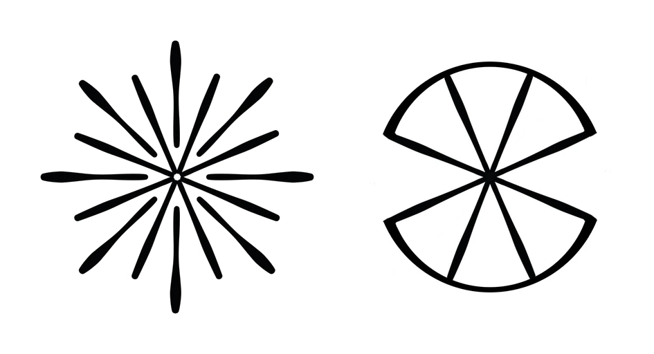
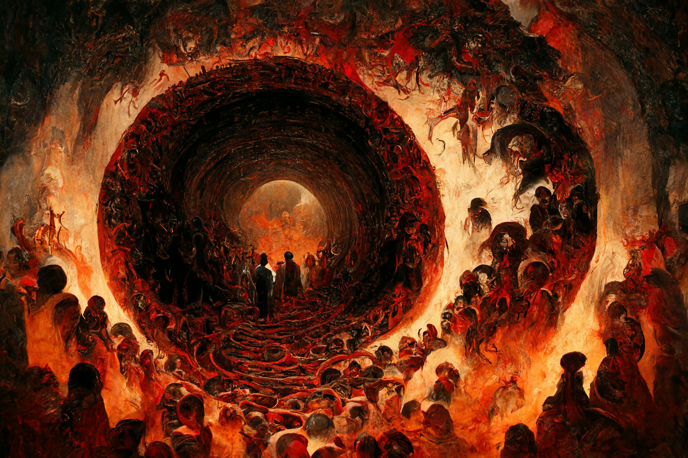
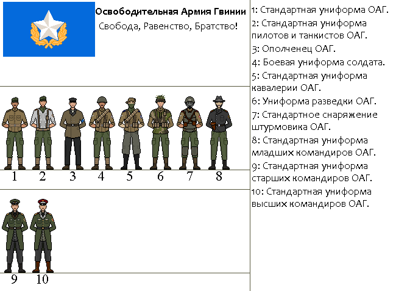
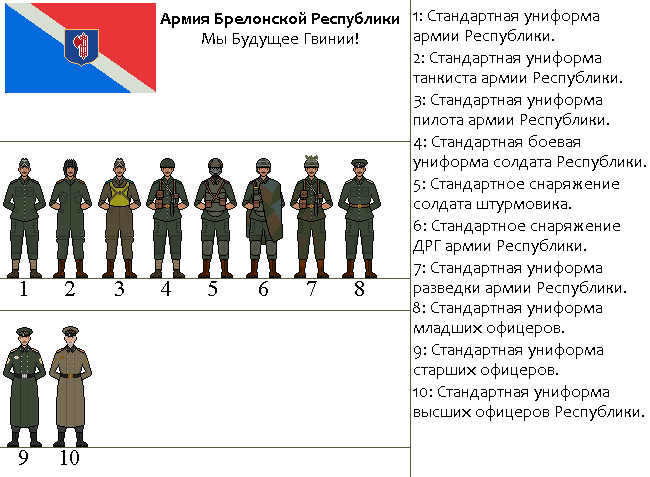
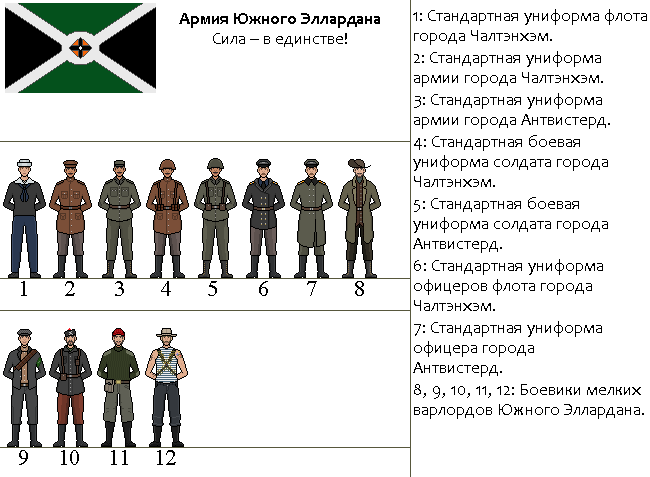
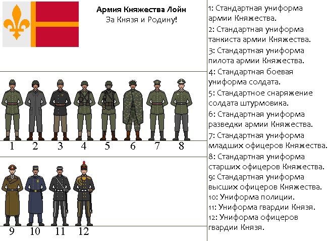
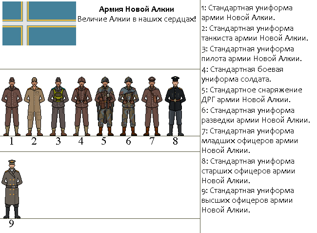
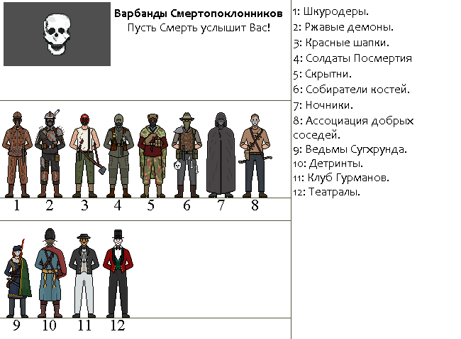

Ravaged Souls – это ролевая игра в духе дизельпанка с элементами вестерна и постапокалипсиса, где вы можете быть кем угодно и делать что угодно.
Для вас открыта огромная территория мира, возрождающегося после апокалипсиса. Выберите свою дорогу и начните собственные приключения на просторах Постгвинии.
Араг — часть света на континенте Эльнатер в Северном полушарии.
Северный Араг — культурно-географический регион в Араге, включающий в себя государства расположенные на территории Актаркульского нагорья, равнин Эллардана и Редлендса.
Великое Знамение — точка отсчета календаря старого мира.
Политическая карта Арага на 1439 год.
Начало
Старый мир до Катаклизма представлял из себя настоящий бурный локомотив прогресса, который, тем не менее, несся по политическим рельсам в черную пучину темных времен. На протяжении всего XIV века в мире гремела промышленная революция, явившаяся следствием феноменального научного прорыва во всех областях: создание двигателей, способных развивать автоматическое производство, новые виды постепенно автоматизирующегося оружия, медицинские новшества, укрепляющие здоровье населения. Именно Араг стал главным центром этой стремительно мчащейся машины прогресса, которая не только способствовала развитию, но и изменению общепринятых укладов во всех сферах. Будь то социальная, где постепенно смывались рамки привычного классового общества, или же военная, где на место этическим и моральным принципам вставала эффективность и холодный расчет.
С середины XIV века именно Северный Араг стал местом, где лучше всего проявляли себя военные новшества и тактики, гарантировавшие победу интересов той или иной стороны конфликта. Интересно было и то, что даже местные небольшие государства, поглощения которых так желали крупнейшие геополитические игроки региона, явились ярким примером того, как технологии способны одолеть численное и даже качественное превосходство. Именно благодаря этому к началу XV века на политической арене Арага между двумя крупнейшими державами — Весперской Конфедерацией и Моргенландской Империей — сохранялись небольшие государства разного политического толка. Они являлись либо управляемыми игрушками той или другой стороны, либо старались сохранять свой нейтралитет посредством укрепления и усиления технологической базы. Одним из таких государств стала и стремительно развивающаяся Гвинская Республика, несколько раз участвовавшая в успешных оборонительных и коалиционных войнах против Моргенландской Империи и соседей, чем заработала врагов и личные геополитические постулаты.
Политическая карта Северного Арага и сопредельных территорий на 1439 год.
Великая Война
Однако именно гиганты обладают большим количеством ресурсов, в которых они также и нуждаются. Борьба за передел мира была лишь вопросом времени. Когда у Весперской Конфедерации и Моргенландской Империи закончились политические плацдармы для расширения, а армии были укомплектованы последними новшествами военной мысли доселе неизвестной разрушительной мощи, началась Великая Война. Точкой окончания истории мира старого порядка принято считать именно начало «Великой войны» меж этими двумя гигантами — 16 сентября 1409 года. По сей день не удалось собрать все архивы о событиях тех дней и получить однозначного мнения от тех, кому даже удалось своими глазами видеть те ужасные события. Однако всем известно, что именно с ряда приграничных инцидентов и провокаций со стороны Империи, которая получила сразу же резкий ответ от Конфедерации, началась крупномасштабная война, которую немногие живые очевидцы называли «Арагской мясорубкой». Такое имя было дано неслучайно, ведь именно в той войне, к которой спустя всего пару недель подключились многие другие соседние державы, разбежавшиеся по разным политическим углам ринга, впервые в истории были нанесены чудовищные потери всем сторонам конфликта. На протяжении почти 8 лет шли непрекращающиеся сражения, в которых военным изобретателям был дан полный карт-бланш на испытание и создание все новых и новых видов оружия.
Несмотря на серьезные политические мотивы всех сторон, ресурсная и социальная база не была готова к такому долгосрочному и кровавому конфликту. Линии фронта практически не двигались, лишь чередуя между собой постоянные наступления и контрнаступления, в результате которых земли переходили из рук в руки, вызывая все более сильное недовольство общественных масс. В обществе, зараженном идеями нового времени и уставшем от столь малоэффективной бойни, с каждым месяцем вспыхивали все более радикальные мятежи, подогреваемые радикальными политиками и преступными элементами, что даже начало приводить к открытым вооруженным столкновениям уже с собственным населением. Это заставило к июлю 1417 года Империю и Конфедерацию осознать, что те стоят на грани распада и краха, и стороны сели за стол переговоров. 30 июля, под давлением общественных масс и надвигающегося экономического коллапса, стороны конфликта подписали мирный договор, начавший последнюю эпоху в истории старого мира и открывший дорогу совершенно новым идеям.
Катаклизм — общее название ряда событий, произошедших 17 мая 1439 года от Великого Знамения. Началом Катаклизма принято считать сверхсильные землетрясения, произошедшие по неизвестной причине, предположительно от единовременного сдвига литосферных плит. Это событие, словно по принципу домино, запустило целый ряд катастроф. Человечество столкнулось с сильнейшими цунами, извержениями вулканов и глобальным изменением климата, которые в итоге привели к огромным жертвам. Цунами, смерчи, бураны, потопы и мелкие землетрясения сопровождали человеческую цивилизацию около года. Концом Катаклизма стала вулканическая зима, заслонившая солнце на целый год.
Фазы Катаклизма
Начало (17 мая – 22 мая 1439)
По всему миру происходят сверхсильные землетрясения от 10 и больше баллов по шкале Рихтера. Приборы зарегистрировали первые толчки на территории Гвинской республики 18 мая в 13:33. Ориентировочно на территории Северного Арага было более 10 эпицентров, некоторые из них приходились на активные вулканические зоны. Также большинство прибрежных городов подверглись затоплению и разрушительным цунами. После 22 мая сила землетрясений снижается до 4–6 баллов по шкале Рихтера.
Климатический сдвиг (23 мая – ноябрь 1439)
Землетрясения стали причиной пробуждения большинства вулканов, в том числе и подводных. По причине их активности изменению подверглись течения в мировом океане, что привело к климатическому сдвигу. Также на эти процессы сильно повлияли газы, выбрасываемые в атмосферу. Климат стал претерпевать резкие преобразования. Там, где никогда не было снега, началась метель, а где всё время были снега, стало теплеть. Это, в свою очередь, привело к таянию полярных ледников и затоплению больших участков суши. Резкие перепады температур стали причиной аномальных циклонов и смерчей, что усугубило ситуацию.
Затишье (декабрь 1439 – 24 марта 1440)
Эта фаза характеризовалась небольшим затишьем, сопровождаемым слабыми землетрясениями и менее разрушительными природными катастрофами.
Вулканическая зима (25 марта 1440 – май 1441)
25 марта, предположительно на юго-востоке материка, произошло сверхсильное землетрясение, которое оценивается более 12 баллов по шкале Рихтера. Этот инцидент запустил цепную реакцию по всем вулканам, что в итоге привело к выбросу неимоверного количества газа и пепла в атмосферу планеты. Тем самым было спровоцировано возникновение вулканической зимы на целый год. С мая 1440 года больше не наблюдалось никакой сейсмической или вулканической активности, но говорить с точностью об этом нельзя, так как с мая 1440 года больше некому было вести наблюдения за ситуацией.
17 мая 1439 — Начало Катаклизма. Сверхсильные землетрясения (от 10 баллов), запустившие цепную реакцию катастроф.
23 мая – ноябрь 1439 — Климатический сдвиг. Пробуждение большинства вулканов (в том числе подводных), изменение океанических течений и выброс газов в атмосферу. Резкие перепады температур, аномальные циклоны и смерчи, таяние полярных ледников и затопление больших участков суши.
Декабрь 1439 – 24 марта 1440 — Затишье. Период слабых землетрясений и относительного спокойствия.
25 марта 1440 — Предположительно на юго-востоке материка происходит сверхсильное землетрясение (более 12 баллов). Запускается цепная реакция по всем вулканам, что приводит к выбросу неимоверного количества газа и пепла в атмосферу.
25 марта 1440 – май 1441 — Вулканическая зима. Пепел заслоняет солнце на целый год. С мая 1440 года сейсмическая и вулканическая активность больше не наблюдалась, но точных данных нет, так как вести наблюдения стало некому.
Посткатаклизм (1441–1470 гг.)
Август 1440 – июль 1441 — Появляются очаги неизвестного заболевания, прозванного в народе «Пепельной чумой». Новая болезнь с невероятной скоростью распространилась по многим людским поселениям.
14 мая 1441 — Конец вулканической зимы.
Июль 1441 — Проявлений Пепельной чумы больше не наблюдается. Общее количество погибших по всему Северному Арагу исчисляется сотнями тысяч человек.
1452 — По всей центральной Гвинии происходят попытки поднять бунты против бандитов-варлордов, которые в своё время захватили обширные территории и подчинили своей воле расположенные там поселения.
Январь 1455 — Формирование первой освободительной армии под предводительством неизвестной личности с псевдонимом «Великий Лидер». В рядах армии скандируют социалистические лозунги, которые довольно быстро подхватывают все окрестные поселения. Данное событие получило название «Красная Волна».
Февраль 1455 — Формирование второй освободительной армии Красной Волны. Вторая армия взяла курс на Брелон, в то время как первая подходила к Алгерону, бывшей столице Гвинской Республики.
Конец февраля 1455 — Начало социалистических бунтов на территории Брелонской Республики.
Март 1455 — Уничтожение второй освободительной армии Красной Волны силами Брелонской Республики у города Дортберг.
Апрель 1455 — Армия Брелона успешно подавляет все очаги Красной Волны на своей территории. В штабе поднимается вопрос о вторжении в Алгерон, но в конечном итоге было принято решение сконцентрироваться на защите Брелона.
28 июля 1455 — Захват Алгерона первой освободительной армией Красной Волны и казнь лжепророка Мёллендорфа.
1 сентября 1455 — Формирование Алгеронской Федеративной Республики (АФР) из остатков активистов Красной Волны и иных участников войны против власти секты Мёллендорфа в Алгероне.
25 марта 1456 — Убийство Великого Лидера во время публичного выступления, начало волнений в АФР.
Сентябрь 1457 — С запада со стороны моря прибыл неизвестный флот, напавший на Фернесс, северный город Постгвинии. Местные общины не смогли оказать сопротивление нападавшим. Город перешёл под контроль бывшего моргенландского адмирала Эркюля Маккензи.
Май 1458 — После череды рейдов по всему северному побережью флот адмирала Маккензи вторгается в воды АФР. Начало полномасштабной войны Вольного Флота Маккензи и АФР.
9 ноября 1458 — Авиационная атака вольного флота Маккензи со стороны авиации АФР. Уничтожение флагмана адмирала.
Декабрь 1458 — Остатки флота Маккензи отходят от АФР, но некоторые его осколки ещё в течение полугода будут терроризировать побережье. Сам Маккензи предположительно погиб вместе со своим флагманом. В АФР назревает кризис власти на фоне крупных потерь в войне.
Январь 1459 — Структура власти флота в Фернессе рухнула. Остатки кораблей либо покинули Постгвинию, либо разбрелись по уцелевшим портам.
5 февраля 1460 — Крупное восстание на территории Брелонской Республики. Восставшие скандируют социалистические лозунги в поддержку Великого Лидера и пытаются захватить сам Брелон.
6 февраля 1460 — С большими людскими потерями восстание жестоко подавляется армией Брелонской Республики. В течение нескольких лет полиция будет заниматься зачисткой остатков восставших.
10 июня 1460 — Смерть Говарда Кайстейна, начало междоусобной войны в Эллардане.
12 сентября 1461 — Начало гражданской войны в АФР.
4 августа 1463 — Создание Южного Эллардана на первом Собрании Земель.
Март 1464 — Затишье (но не конец) гражданской войны в АФР.
Сентябрь 1468 — Княжество Лойн начинает поход на дикие территории с целью вернуться в пределы границ 1439 года.
7 октября 1470 — над Алгероном, бывшей столицей Гвинской Республики и АФР, во время необычной грозы поднялся полупрозрачный сизый купол. В городе началась паника, воюющие стороны возобновили боестолкновения, считая, что их оппоненты ответственны за происходящее. Ничто не может войти и выйти из города. В тот же день некоторые очевидцы говорили о том, что видели мощную вспышку высоко в горах. Спустя несколько часов купол над Алгероном спадает, а спустя мгновение весь город озаряет мощнейшая вспышка, уничтожающая все в пределах десятка километров. От Алгерона остался лишь глубокий кратер в земле, а окрестные земли разрушены ударной волной.
После взрыва Алгерона (1470–1479 гг.)
Октябрь 1470 — новость об уничтожении Алгерона распространяется по окрестным территориям. Многие в это не верят, считая глупой байкой, но правительства основных государств Постгвинии находятся в полном ужасе от осознания того, что некто обладает столь разрушительным оружием.
Ноябрь 1470 — создание ОАГ (Освободительной Армии Гвинии) Джеймсом Оливером Эштеном на обломках Алгеронской Федеративной Республики (АФР) и из числа беженцев, потерявших дом после взрыва.
Январь 1471 — ОАГ начинает стремительно распространять свое влияние на соседние территории. Брелонская Республика начинает наращивать армию в связи со взрывом Алгерона и активностью ОАГ у приграничья.
1472 — Подписание Дортбергского мира. Вялотекущая война между ОАГ и Брелоном завершается договором о разделе зон влияния. Установление «хрупкого мира» и начало экономического симбиоза между государствами.
1473–1474 — Война за Олегер между Лойном и Новой Алкией. По итогам мирного договора Олегер остаётся под контролем Новой Алкии.
1479 — Текущий момент. Мир находится в состоянии «хрупкого мира» и экономического застоя.
От всемирного природного Катаклизма прошло уже больше 40 лет. Лишь немногие люди все еще помнят старый мир, уже выросли целые поколения, для которых окружающая обстановка привычна и обыденна, а истории о прежнем мире воспринимаются лишь как сказки и небылицы.
Весь полуостров Постгвинии или же полуостров Актару можно разделить на три условные зоны — северные, центральные и южные земли. Иногда отдельно выделяют западные территории, в которые включают весь полуостров Эллардан до окрестностей города Эггемоунт, и Дикое Побережье, включающее в себя всю территорию восточнее горного хребта Актарул, а также Дальний Юг, расположенный дальше границы Княжества Лойн и Новой Алкии.
Политическая карта Постгвинии на 1479 год.
Северная Постгвиния
Северные территории в своём нынешнем состоянии представляют собой достаточно опасные места. Там нет никакой силы или структуры, которая навела бы порядок и приструнила местное население. Единственным островком стабильности является северный город Маунтер, в котором власть удерживает религиозная секта Дома Ворона. Общее экономическое и социальное положение находится в серьёзном упадке. Связано это прежде всего с последствиями прохождения над данными территориями аномального сверхциклона 40 лет назад, уничтожившего большую часть инфраструктуры региона, а также с последствиями вулканической зимы и эпидемией Пепельной чумы.
Основная часть населения представлена вольными фермерскими поселениями, которые с крайним недоверием относятся к чужакам, а также различными бандитскими группировками и радикальными культами. Крупные города либо пусты, либо заселены малыми общинами с различными социальными устоями и отношением к чужакам. «Сначала стреляй, а потом болтай» — народная поговорка северян.
Центральные земли
Центральные земли можно назвать наиболее безопасными и цивилизованными территориями. Связано это прежде всего с наличием на этих землях крупных государственных образований, таких как ОАГ, Брелонская Республика и Топливные Лорды. Большая часть населения, как правило, является гражданами ОАГ и Брелонской Республики, между которыми установлены «хрупкие мирные» отношения, несмотря на некоторые противоречия во внешней политике. Торговля достаточно активная, на дорогах центральных земель (даже на Диких территориях) можно часто увидеть различные караваны с товарами, следующие по своим маршрутам.
Дикие территории центральных земель населены в основном различными вольными поселениями и городками. Уровень бандитизма достаточно низок, прежде всего из-за действий ОАГ и Брелона, но риск быть ограбленным или убитым всё ещё имеется. Исключением является река Тверау, где наблюдается довольно высокая активность речных пиратов, совершающие рейды иногда даже на брелонский город Хобсс.
Западная Постгвиния
Западные земли являются местом нестабильным, где главным источником нестабильности является Южный Эллардан, откуда частенько местные варлорды совершают рейды по вольным поселениям и городкам. Также Южный Эллардан можно назвать самым большим пристанищем пиратства на территории всей Постгвинии. Зачастую пиратством промышляют сами варлорды, грабящие не только своих соседей на главной торговой артерии — реке Тверау, но и терроризирующие западное побережье Постгвинии. Порой возникают даже интересные ситуации, где одни варлорды борются с пиратством, чтобы самим промышлять пиратством. Тем не менее ситуация всё ещё не является катастрофической, так как герцог Чалтэнхэма своим личным флотом не позволяет пиратам сильно разгуляться.
Дикие территории запада представлены прежде всего небольшими вольными поселениями, далеко от приграничья Южного Эллардана. Местные жители не доверяют чужакам и опасаются налётов варлордов, так что одинокого путника просто прогонят, не дав ночлега и еды.
Южная Постгвиния
реть всей Южной Постгвинии представлена дикими ничейными территориями, соседствующими с нестабильным западом и цивилизованным центром, что создаёт довольно интересный колорит. Так, сюда нередко забредают варлорды Южного Эллардана в поисках наживы или рабов, имеются различные бандформирования и радикальные культы, но также здесь процветают торговые маршруты между государствами центра и юга. Торговля в свою очередь позволяет множеству вольных поселений и городков процветать и развиваться.
ами государства юга — Княжество Лойн и Новая Алкия — прежде всего занимаются выражением обоюдной неприязни друг к другу, но не мешают проведению торговли на Диких территориях, по крайней мере от своего лица. Южное приграничье Лойна подвергается частым набегам со стороны бандформирований равнин Редлендса, а побережье Новой Алкии терроризируют мелкие пиратские банды, но эти события не мешают активной торговле этих государств с внешними землями. Такие противоречия создают современный облик юга, выраженный в торговле и опасности. «Любой уважающий себя торговец должен иметь у себя револьвер и пару гранат» — народная мудрость южан.
Дикое Побережье
Дикое Побережье — место странностей и опасностей. Само побережье образовалось 40 лет назад; до этого здесь были обширные зелёные равнины и реки, но теперь вместо всего этого — бескрайняя морская гладь воды. Местное население представлено прежде всего жителями гор, спустившимися к новому побережью, и потомками алкийцев, оставшихся на этих местах после Катаклизма. Несмотря на своё название, местные жители довольно добродушные люди, но из основных занятий здесь — либо рыболовство, либо пиратство с работорговлей.
При этом основной целью пиратских налётов является побережье Новой Алкии либо мелкие вольные поселения, лежащие южнее Новой Алкии. Помимо местных пиратов с Дикого Побережья на этих территориях орудуют и пришлые пираты с востока, которые нападают на всех без разбора. Таких пришлых местные называют уйшкунами и стараются при возможности топить их катера и лодки.
Актарульские горы
Величественные Актарульские горы возвышались над этим миром тысячелетиями, и ничего не изменилось после краха цивилизации человечества. Горы — место суровое, там своя атмосфера, своя история, свой ход времён, влияющий только на величественные тысячелетние камни и снежные пики. Местные горцы представлены в основном актарами, но встречаются потомки беженцев-алкийцев, а также гвины, живущие на этих склонах с самого Катаклизма. Здесь можно неделями бродить и не встретить никого, наблюдая лишь камни, густые леса да водопады горных рек.
Несмотря на безмятежность и спокойствие, горы являются опасным местом. Здесь нередки рейды бандформирований на актарские шахты или этнические стычки между фанатиками язычниками и новыми местными из числа потомков беженцев. Самое опасное, что может случиться с путником, — это встреча с процессией языческого жреца или колдуна, ведь никто не знает, что произойдёт. Путника могут как отпустить, так и схватить, чтобы провести над ним загадочный ритуал во имя древних Архонтов Хтониса. Всё, что происходит в горах, остаётся в горах.
Экзаменатство (с древнехарв. examinatia — «испытание») — религиозно-философское учение, возникшее в V–VI веке до В.З. и являющееся первой и единственной монотеистической религией на континенте. В основе веры лежит доктрина о том, что мир — это череда испытаний, посылаемых Создателем. Существование людей полагается вечным прохождением трудностей в череде перерождений. Цель верующего — пройти свой «Экзамен» с честью и слиться с Бездной, обретя вечный покой.
Экзаменатство зародилось в древности. Первые письменные упоминания о Создателе датируются VI веком до В.З., что совпадает по времени с Харванским потопом, уничтожившим крупнейшую цивилизацию древнего мира.
Великое Знамение — ярчайшая вспышка в небе, которая остановила масштабную войну. Церковь трактует это событие как величайшее доказательство существования Создателя и использует Звезду Создателя как главный символ веры. Катаклизм 1439 года стал для экзаменатов новой священной «Катастрофой», доказательством того, что человечество ещё не прошло свой Экзамен.
Священные тексты и Догматы
Основой канона экзаменатства служит «Книга Создания», закладывающая фундаментальные идеи Экзамена и устройства мира. Остальные книги не просто дополняют её, а раскрывают сложные догматы, пророчества и учения, без которых невозможно постичь волю Создателя.
● Книга Создания» (Корпус о Начале) — компиляция из шести древних текстов о сотворении мира и идее Экзамена. Оригинал неизвестен, но верующие почитают самый древний из них.
● Книга Наследия — создана позже, содержит учение о «Детях Корнеозия», «Бездне» и «Перерождении».
● Книга Катастроф — самый поздний текст (середина I века В.З.), написанный «Кругом Памяти». Связывает реальные исторические катаклизмы с доктриной Экзамена.
Бездна — конечная точка Экзамена. Абсолютное небытие, отсутствие времени и памяти. Самая популярная трактовка: Создатель и Бездна — одно и то же. Акт творения и акт поглощения равны. Страдания заканчиваются, когда Создатель обращает человека в ничто. Концепция апокалипсиса связана с Корнеозием — существом, совращающим людей с пути Экзамена.
Локальные Церкви и Ветви
До Катаклизма церковь имела единую вертикаль власти (во главе с Патриархом), но после падения Гвинской Республики и хаоса «Красной Волны» единая церковь распалась. Сегодня Экзаменатство — это конгломерат локальных церквей, каждая из которых имеет свои особенности, но признаёт общие догматы о Создателе, Бездне и Экзамене:
● Ортодоксальная Церковь Лойна — самая консервативная и влиятельная. Тесно переплетена с феодальной властью князя. Святая Инквизиция жёстко подавляет любые ереси. Обряды здесь наиболее суровы и архаичны.
● Церковь Бездны (Южный Эллардан) — в условиях анархии и рабства смерть (Бездна) воспринимается здесь как освобождение. Ортодоксы из Лойна подозревают их в ереси, но Церковь Бездны держит нейтралитет, боясь потерять влияние.
● Брелонская церковь — в олигархическом Брелоне церковь существует, но находится под жёстким надзором «Железных 60-х». Здесь она скорее выполняет функцию социального института, оправдывающего тяжёлый труд рабочих. Догматы о Бездне трактуются как «естественный конец изношенного механизма».
● ОАГ (Государственный атеизм) — после формирования и становления ОАГ религия была объявлена пережитком Старого Мира. Храмы переоборудованы под склады и клубы, Мерники лишены сана и отправлены на тяжёлые работы. Партия заменила веру культом ударного труда. В глубинке колхозники тайно молятся на дому.
● Новая Алкия (Запрет религии) — любая вера приравнена к антигосударственной деятельности. Для технократов Министерства Порядка религия — это иррациональная трата ресурсов. Верующие отправляются на психиатрическую экспертизу или на «списание». Вместо веры в Создателя здесь поклоняются Прогрессу и Министерству Порядка.

Символ Церкви — Звезда Создателя и упрощенный вариант для ношения.
Иерархия
Церковь не имеет пышных титулов и золотых куполов. В основе лежит принцип: «Кто больше страдает, тот ближе к Бездне и завершению Экзамена».
Высшее духовенство (Хранители Догмы):
● Экзарх — верховный судья. Живое воплощение Экзамена. Считается, что Экзарх должен быть самым старым и измождённым человеком в церкви, так как он принял на себя страдания всего мира. Он живет в главном храме-цитадели, где нет окон, только свечи и каменные стены.
● Арбитры — высшие судьи. Они решают, прошел ли человек Экзамен, или его нужно отправить на дополнительные муки. Они не проповедуют, а выносят вердикты. Их слово — закон для целых регионов.
● Мерники — проводят обряды, читают проповеди и ведут учёт «оценок». Именно они работают с простыми людьми, выслушивая их жалобы и взвешивая их грехи, чтобы отмерить правильное испытание.
Монашество (Страдающие за мир):
● Аскеты — добровольно отказавшиеся от благ мира. Живут в скитах на границе с Бездной (или в глухих лесах). Они не учат людей, они молятся и страдают, веря, что их боль очищает мир.
● Послушники — проходят обучение в монастырях. Их главная задача — учиться терпеть боль, голод и тишину.
Обряды
Обряды Экзаменатства лишены блеска и радости. Это мрачные, тихие церемонии, напоминающие о бренности тела и неизбежности Бездны:
● Пепельное Омовение — новорожденного не окунают в воду. Его натирают смесью пепла и соли (символ земли и боли). Мерник проводит пальцем по лбу младенца, оставляя грязный след, и произносит: «Пепел к пеплу. Пусть твой Экзамен будет долгим». Ребенка заворачивают в грубую серую ткань.
● Взвешивание — человек приходит к Мернику не каяться, а признавать свои слабости. Обряд проходит в темной комнате, где верующий становится на колени на рассыпанную соль или горох. Мерник не отпускает грехи. Он накладывает «Епитимью» — физическое испытание (например, «Три дня стоять на коленях на камнях» или «На месяц отказаться от горячей пищи»). Искренность проверяется тем, как человек выполняет задание.
● Постриг — кандидату выбривают часть волос на голове (символ отказа от суеты). Затем Арбитр ударяет его по щеке (символ смирения) и заставляет провести ночь в полной темноте, без еды и воды, читая молитвы. Если он не сходит с ума от страха и не пытается сбежать — он получает сан.
● Узы Испытания — брак — это не союз любви, а сцепка двух людей для совместного прохождения Экзамена. Мужчина и женщина связывают свои запястья грубой веревкой на три дня. Они должны вместе работать, молиться и терпеть друг друга, не расцепляя рук. После обряда веревку сжигают, а пепел развеивают.
● Отдание Бездне — тело не хоронят в земле (земля нужна живым). Его сжигают на погребальном костре. Пока огонь горит, никто не плачет. Мерник читает отрывок из «Книги Наследия» о том, что «память — это иллюзия, ибо в Бездне нет прошлого». Пепел собирают в глиняную урну и высыпают в реку или в пропасть.
Дети Корнеозия — древняя тайная секта, существующая практически столько же, сколько и само Экзаменатство. Их идеология является абсолютной тенью официальной церкви. Если Экзаменатство учит, что страдание очищает душу для перерождения, то Дети Корнеозия верят, что страдание — это ловушка. Они стремятся к «Великой Тишине» — состоянию абсолютной пустоты, в котором душа перестает чувствовать боль, а значит, обретает вечный покой.
Корнеозий считается первым «отказником». Согласно верованиям секты, это существо (или человек) нашло способ «выключить» свою душу еще до Великого Знамения, отказавшись проходить Экзамен. Он обрел бессмертие, но не через перерождение, а через Пустоту. С тех пор он скитается по миру, меняя обличья, и совращает людей, предлагая им избавиться от мук.
Секта веками скрывалась в подвалах храмов, катакомбах и темных подворотнях городов. Катаклизм 1439 года и Пепельная чума стали для них «праздником» — обилие боли и смертей позволило им выйти из тени и предложить выжившим «спасение» в виде отказа от эмоций. Именно тогда секта проникла во властные структуры многих государств и иных фракций.
Секта придерживается идеологии апокалипсиса, в котором человечество должно полностью отказаться от страданий и стать «пустым», чтобы Экзамен потерял смысл. Такой мир не пройдет очищение и рухнет в Бездну раньше времени. «Тихие» искренне верят, что несут милосердие, ускоряя этот процесс.
Пути Очищения
«Тихие» внешне неотличимы от обычных людей, но обладают рядом жутких физиологических аномалий: они не чувствуют боли, никогда не плачут и не смеются, а их лица не проявляют искренних эмоций.
Чтобы достичь такого состояния, адепт должен пройти «Очищение». В секте существуют два принципиально разных подхода, и между их последователями давно зреет скрытый конфликт:
● Путь Фармацевта — самый распространенный метод для низших ступеней посвящения. Адепты используют сложные химические препараты, рецептуры которых известны только секте, для подавления центров боли и эмоций. Они сохраняют интеллект, память и способность выполнять сложную работу, но становятся химически зависимыми. Если у «Фармацевта» заканчиваются препараты, подавленная человеческая сущность может прорваться наружу в виде дикой паники и агонии.
● Путь Тишины — элита культа, которой открыт путь к высшим ступеням посвящения. Они добиваются замедления пульса, невосприимчивости к боли и полной бесшумности через медитации, сенсорную депривацию, самобичевание и тренировки в абсолютно темных бункерах. Аскеты презирают «Фармацевтов» за использование химии, считая, что истинная тишина достигается только через контроль духа.
Иерархия
● Спящие — новообращённые, измученные войной, голодом или горем люди. Они ещё живут обычной жизнью, но уже посещают тайные собрания. В их глазах поселилась пустота, и они ждут «пробуждения».
● Братья и Сестры — адепты, готовящиеся к полному «Очищению». Внешне это идеальные, милосердные и крайне спокойные люди. Часто работают врачами, медсёстрами, священниками или учителями. Они вербуют новых «Спящих» через сострадание и помощь.
● Усмирённые — те, кто полностью отринул человеческие эмоции. Они управляют ячейками культа в городах. Никогда не моргают, когда смотрят на людей. Их лица напоминают гипсовые маски.
● Рука — беззвучный убийца. Ликвидирует тех, кто предал культ или не смог стать «Усмирённым». Убивает только тихо — удушением, ядами или специальными беззвучными дротиками.
● Голос Первенца — одержимый Корнеозием человек. Никто, кроме усмирённых и рук, не может его видеть, но все его почитают и выполняют его волю как волю Корнеозия.
Обряды
В отличие от Смертопоклонников, «Тихие» не устраивают кровавых оргий. Их ритуалы — достижения психиатрии и инженерии старого мира, чтобы ломать человеческую волю и достигать «Великой Тишины».
● Эхо Пустоты (Обряд посвящения) — Кандидата помещают в «тихую комнату» — звукоизолированное помещение расположенное в укромном месте, будь то старый подвал или заброшенный бункер. Его оставляют там на 3 дня в абсолютной темноте, оставив ему только необходимый запас воды. Если инфраструктура позволяет, то в камеру транслируется едва уловимый белый шум, но зачастую бывает только тишина. Кандидат должен «услышать» в этой тишине голос Корнеозия и добровольно отказаться от человеческих привязанностей. Если он начинает кричать, царапать стены и умолять о пощаде — его считают «шумным» и либо убивают, либо используют как «расходник» для хирургических практик.
● Немая Исповедь — верующий садится напротив «Брата» или «Сестры» в абсолютно пустой комнате. На столе лежит лист бумаги и карандаш. Человек должен молча написать все свои страхи, грехи и эмоциональные привязанности. Затем «Брат» или «Сестра» берет лист, читает его без единой эмоции на лице и сжигает на металлическом подносе. После этого верующий обязан молчать 24 часа, считая, что «пепел его эмоций» ушел в Бездну.
● Тихие Альбомы — сектанты используют старые фотоаппараты для создания альбомов со снимками пустых комнат, заброшенных фабрик и мертвой природы. Долгий просмотр таких альбомов вызывает у обычных людей сильное чувство дискомфорта и паники.
● Очищение Плоти — «Тихие» не считают боль карой или путём к очищению. Для них она болезнь души, которую можно «вырезать», как опухоль. «Братья» и «Сёстры» (особенно идущие по Пути Фармацевта) оперируют жителей трущоб, больных, раненых и пленных, называя это «милосердной хирургией». Процедура состоит из серии вмешательств и препаратов, цель которых в том, чтобы навсегда заглушить в человеке центры боли и чувств. Хирург работает с идеально спокойным лицом и холодными руками: крики пациента для него лишь «шум», симптом болезни, который исчезнет, когда операция удастся.
Многие пациенты умирают или теряют рассудок, но секта и это считает милосердием: «лучше тихий, чем кричащий». Те, кто выжил, становятся «исцелёнными»: апатичными, безвольными и безобидными. Их оставляют при ячейках в качестве слуг, помощников и материала для дальнейших опытов. Для «Тихих» каждый такой человек уже никогда не пройдёт Экзамен, а значит, это ещё один шаг к Великой Тишине.
Отношения с фракциями
● Экзаменатство — главный враг. Церковь веками пытается уничтожить секту, но «Тихие» слишком хорошо маскируются под идеальных прихожан. Инквизиция Лойна сходит с ума, пытаясь их вычислить.
● Смертопоклонники — абсолютные противники. Смертопоклонники ищут боль и пытаются «договориться» со Смертью. «Тихие» же отрицают саму идею боли, считая их «шумными идиотами»
● Язычество — языческие жрецы истолковывают образ Корнеозия как «ошибка» Хтониса, ибо он не живой и не мёртвый, а просто пустой. Актары сторонятся мест, где видели «Тихих».
● Государства — Правительства не подозревают, что некоторые из их лучших хирургов и чиновников служат Корнеозию. В спецслужбах не редко можно встретить законсперированных «Тихих», ведь те по всем параметрам являются идеальными агентами и довольно быстро получают отличные рекомендации будучи не раскрытыми многие года.
Северное язычество — система доэкзаменаторских представлений о мире и человеке, исконная вера коренного населения Актарульских гор (актаров). До Катаклизма она была практически уничтожена церковью Экзаменатства, но крах старого мира позволил ей вновь выйти из тени. Сейчас язычество активно распространяется среди горных и предгорных поселений, а в горах, по слухам, объявились высшие жрецы Архонтов, стремящиеся расширить свою власть.
Язычники делят мироздание на два противоположных пространства:
● Антропос (Кан-Атропос) — материальный мир смертных, пространство стабильности. Здесь всё имеет конечную форму, которая меняется только под воздействием физических сил природы или зверя.
● Хтонис (Хаута-Хтонис) — «Мир за Завесой», антипод Антропоса. Место обитания первичных богов — Архонтов. Это пространство изменчивых форм, где ничто не имеет окончательного значения: случайный прохожий может обернуться злейшим врагом или потерянным отцом.
● Завеса — тонкая граница между мирами, охраняемая двумя стражами материального порядка — Солнцем и Луной.
Архонты и Золотой Город
Архонты — первосущности, изгнанные в Хтонис из Золотого Города Аан'Реш (Махарта), колыбели всего сущего. Никто не знает, кем и почему они были изгнаны, и даже сами Архонты не помнят причин. Аан'Реш затерян в глубинах Хтониса и проявляется в материальном мире лишь в виде порталов в глубоких расщелинах, на пепелищах битв и под руинами осаждённых городов.
Каждый Архонт обладает своим Хаутанхом — пространством типичных для него эманаций (идей, энергии, событий). Например, Хаутанх Науцетты описан как безразмерный публичный дом без стен, а Хаутанх Новэта — как пространство стагнации и медленного гниения.
Пантеон Архонтов:
● Науцетта — архонт сотворения, репродукции, смены сезонов и женственности.
● Аламарис — архонт уничтожения, деструкции и насильственной пересборки (проявляется в звоне мечей, хищниках и разрухе).
● Катингра — архонт процесса, течения времени и причинно-следственных связей (покровитель прогресса и последовательности).
● Новэт — архонт забвения, апатии и безнадёжности (проявляется в насекомых, бродягах и прокажённых).
● Барон — архонт невозврата, финальной точки и тотальной смерти (после которой нет ничего).
● Маланхус — архонт сомнения, эгоизма и восстания (первичный двигатель героических поступков и стремления выбиться из грязи).
● Этанга — архонт материи, пространства и стихий (гор, рек и молний).
● Абелес Мотт — архонт загадочности, предательства и харизмы (проявляется в вожаках стай, поэтах и королях-ораторах).
Манарам и Безмерные Боги
Манарам — подземное пространство глубоко под Кан-Атропосом, состоящее из полуматериальных пещер и океанов крови. Вместо неба над ним висит чёрная пустота с сотнями красных глаз. Здесь обитают Хаурамы (Безмерные Боги) — бывшие Архонты, убитые или изгнанные своими сородичами и превращённые в титанических монстров. Они лишены божественных сил и уже тысячи лет движимы лишь ненавистью и желанием вырваться, чтобы уничтожить вероломных сородичей.
Сущности Манарама:
● Хтонглиот — верховная сверхсущность, бездумный механизм, случайно создавший Вселенную. Он заточён в Манараме своими же детьми (Архонтами) и представляет собой бесконечного кашалота, плавающего в пустоте. Никто не знает сути его «Плана», но его осуществление приведёт к уничтожению всего сущего.
● Террос — бывший Архонт познания, принёсший смертным огонь и инструменты. Был объявлен предателем и вместе с другими изгнанными Архонтами (Эльдерум, Харуд, Зелиос и др.) сформировал Великую Армаду, проигравшую Битву при Чёрном Солнце. Чтобы создать Завесу между Хтонисом и Антропосом, Армада взорвала Чёрное Солнце.

Манарам. Картина А. Гротона 1316 г.
Ритуалы и Жречество
Вера актаров не терпит суеты. Любой обряд — это сделка с Архонтами, где цена всегда высока, а последствия непредсказуемы:
● Хирг (Священное место) — это не просто храм, а мегалитический комплекс из неотесанных камней, часто расположенный в глубоких расщелинах или на вершинах, куда бьют молнии. В Хиргах Завеса между Антропосом (миром живых) и Хтонисом (миром Архонтов) наиболее тонка. Вход в Хирг посторонним строго запрещен, а осквернение камней карается смертью.
● Годи и Сахе Годи (Жрецы) — «проводники» воли Архонтов. Они не утешают паству, а требуют. Верховный жрец (Сахе Годи) живет в уединении, так как считается, что его душа уже наполовину в Хтонисе.
● Ходуны по Хтонису — колдуны-изгои и отступники, которые отказались от традиционных обрядов Годи и решили искать силы напрямую в Хтонисе. Языческие жрецы считают их проклятыми, обреченными на вечные муки в Манараме. Но втайне даже самые набожные актары боятся их и иногда обращаются к ним, когда молитвы Архонтам не помогают.
● Дар Хаутанха — актары верят, что у каждого Архонта есть свое «пространство эманаций» (Хаутанх). Чтобы задобрить бога, нужно принести ему то, что соответствует его сути.
● Запечатывание Лика — именно с этим обрядом связан строгий запрет актаров на фотографии и портреты. Они верят, что изображение человека (или вещи) — это его «слепок» в Антропосе. Сфотографировав человека, чужак может украсть часть его души и продать ее Архонтам или колдунам Хтониса.
● Погребальный костёр — актары верят, что душа, оставшаяся в Антропосе, будет вечно страдать, поэтому тело нужно уничтожить. Погребальные костры разжигаются на вершинах гор, чтобы ветер унес пепел в небо, а дым — к Архонтам.
Смертопоклонство — обобщающее название для ряда мистических практик децентрализованных культов, главной особенностью которых является почитание Смерти. В противоположность Экзаменатству, смертопоклонство отрицает идею перерождения, выстраивая отношение к смерти как к абсолютному концу существования личности. Смерть здесь не просто неизбежна — её одушевляют и пытаются «наладить общение», чтобы обмануть, запутать или задобрить. Это не единая церковь, а множество разрозненных суб-культов, объединённых лишь общей догматикой и ужасающими методами.
Смертопоклонство зародилось в годы вулканической зимы (1440–1441 гг.), когда мир погрузился в хаос, голод и отчаяние. Впервые о нём стало известно после первых случаев каннибализма. Тогда культ носил спонтанный характер: людей находили четвертованными, освежёванными или исписанными посланиями к Смерти.
Первым известным деятелем смертопоклонства стал человек по прозвищу Палач, действовавший в северных районах Алгерона в самый разгар вулканической зимы. Своих жертв он маниакально пытал, прежде чем убить и употребить в пищу. Примечательны были его надписи кровью жертв, содержащие обращения к Смерти или «назидания» касательно неё. «Смерть идет за каждым из нас» — одна из самых известных фраз Палача, значащаяся эпиграфом к «Алфавиту». Палач не был пойман, а его дело живёт и развивается по сей день. Расцвет смертопоклонства пришёлся на конец вулканической зимы, тогда же и был написан «Алфавит».
Центром возникновения и распространения можно с уверенностью назвать Алгерон, так как все первые упоминания о смертопоклонстве относятся именно к этому месту. Впоследствии Взрыв Алгерона (1470 г.) уничтожил, по разным оценкам, около половины последователей культа. Но к тому времени смертопоклонство уже вырвалось за пределы бывшей столицы Гвинии и медленно распространилось по всей Постгвинии. Главная угроза для караванов в Диких территориях — это именно они.
Догматика
Догматика смертопоклонства не является единой, так как культ децентрализован. Однако большинство суб-культов опирается на священный текст «Алфавит» — сборник руководств по пыткам с вкраплениями анатомических данных и критикой Экзаменатства. Считается, что «Алфавит» не просто учит убивать, а содержит ключи к тому, как обмануть Смерть.
Основные догмы смертопоклонства заключены в так называемых «истинах жизни»:
● Жизнь одна, смерть неотвратима — никакого перерождения и никакой Бездны не существует. За гробом — лишь пустота.
● Смерть — это механизм. Она не разумна, но подчиняется определенным законам. Её можно запутать, отвлечь или подкупить.
● Боль — это валюта. Единственный способ «договориться» со Смертью — предложить ей зрелище чужих страданий. Чем изощрённее пытка, тем больше «времени» она дарит палачу.
● Плоть — это ресурс. Вместе с внутренностями убитого передаётся его «недожитое» время. Поедание врага — это не просто каннибализм, это кража его жизненной силы.
● Имя — это якорь. Смерть находит человека по его истинному имени. Тот, кто скрывает своё имя под маской и кличкой, становится для Смерти невидимым.
Философия
«Алфавит» — это не столько священный текст, сколько извращенный медицинский справочник. Смертопоклонники обладают глубокими (хоть и безумными) знаниями анатомии. Они используют самодельные хирургические инструменты и довоенные препараты, чтобы продлевать агонию жертвы. В их логовах можно найти редкие лекарства и банки с формалином.
Смертопоклонники — это не просто убийцы, это люди, сломленные осознанием абсолютной конечности бытия. Они не любят смерть — они боятся её. Их жестокость — это попытка «откупиться» от пустоты. Они верят, что память о жертве (её боль, её крики) дает им право на существование.
Высшую касту смертопоклонства составляют «Одиночки» — скрытные убийцы, живущие двойной жизнью. Они презирают «Стаи» (варбанды) за их шумность и хаотичность. Одиночки часто используют Стаи как приманку в своих кровавых играх.
Обряды
В смертопоклонстве нет единых обрядов, но есть общие практики, которые каждый суб-культ адаптирует под себя. Их ритуалы — это не молитвы, а кровавые хирургические и психологические акты насилия.
● Аукцион Плоти — смертопоклонники считают, что Смерть — это хищник, который приходит на запах агонии. Пока жертва кричит, палач «выторговывает» у Смерти дополнительные дни жизни для себя. Если жертва умирает слишком быстро (от болевого шока), ритуал считается провальным, так как «Смерть осталась голодной».
● Трапеза Недожитого — смертопоклонники верят, что печень и сердце содержат в себе остатки жизненной энергии. Поедание этих органов, часто сырыми или приготовленными, символизирует «поглощение» их недожитых лет. Кровь часто используют вместо чернил для написания посланий.
● Запечатывание Лика — каждый последователь культа обязан скрывать своё лицо. Это может быть ритуальная деревянная маска, старый довоенный противогаз, хирургическая маска или просто тряпка. Это не только способ скрыть истинное имя от Смерти, но и попытка «обмануть» её. Смертопоклонник как бы говорит: «Я не тот, кто тебе нужен». Снимать маску перед другими людьми — это акт величайшего доверия (или безумия), так как это раскрытие Смерти своего истинного лица.
● Реинкарнация Имен — последователи группового течения полностью отказываются от прошлой жизни. Они сжигают свои старые документы, вырезают на теле шрамы и берут новые имена. Ведь если Смерть записала тебя в свой список под старым именем, а ты сменил его — ты «вычеркнул» себя из списка. Именно поэтому они называют друг друга только кличками, а истинные имена передают лишь самым близким.
● Хирургия Избранных — некоторые суб-культы (например, Детринты, почитающие Архонта Барона) практикуют добровольное членовредительство. Они отрезают себе уши, пальцы или выкалывают глаза, веря, что, отдавая часть своей плоти здесь, они «оплачивают» дополнительное время в мире живых. Это делает их похожими на жертв из «Алфавита», но по собственной воле.
Дом Ворона — религиозная секта, своими истоками уходящая в смертопоклонство, но ставшая его полной противоположностью. Если смертопоклонники ищут бессмертие через насилие и «отнимание» жизненной силы, то Дом Ворона выбрал дорогу через постижение высших истин, духовное самосовершенствование и контроль над телом. На данный момент руины Маунтера полностью находятся под контролем секты, что делает это место наиболее безопасным и стабильным на всем севере Постгвинии.
Главной почитаемой фигурой в секте является пророк под именем Вечный Ворон, чья фигура впервые возникла весной 1462 года во время событий великого кровавого похода в охваченном войной Алгероне. Смертопоклонники увидели в Вечном Вороне идеал бессмертия, ведь во многих историях и слухах он умирал только для того, чтобы явиться вновь. Став в глазах людей тем, кто смог «договориться» со Смертью, Вечный Ворон довольно быстро сплотил вокруг себя большую группу последователей, готовых делать все, что им велит пророк, только ради того, чтобы обрести вечность в материальном мире.
Незадолго до уничтожения Алгерона Вечный Ворон с последователями покидает город и уходит на далекий север, чтобы впоследствии обосноваться в разрушенном Маунтере. На новом месте секта смогла набраться сил, окрепнуть и набрать новых последователей из числа местных северян.
Догматика
Главная идея секты заключается в постижении почти божественной сущности бессмертного Вечного Ворона ради приближения своего материального тела к стабильному постоянству вне времени. Фигура Вечного Ворона из пророческой постепенно трансформировалась в обожествленную не только благодаря бессмертию, но также всезнанию и всевозможности быть везде и сразу.
Последователи секты практикуют различные духовные и мистические практики в своем пути к пониманию божественной сущности Вечного Ворона. Все последователи готовы оказать помощь людям с чистой душой, ведь помощь ближнему приближает очищение души к пониманию истин, но они также готовы самоотверженно броситься на того, кто несет хаос и разрушение в мире, поэтому не стоит считать их легкими целями. Каждый последователь не только совершенствует свой дух, но также развивает свое тело и навыки обращения с оружием, становясь полноценной боевой единицей в рядах последователей Вечного Ворона.
Секта Дома Ворона всегда готова принять любого путника, вне зависимости от его взглядов, дав ему кров и пропитание. Ведь путь к возвышению должен идти об руку с добротой и состраданием, как тому велит учение секты. Это не распространяется на «черные пустые души», что своим тлетворным влиянием и жаждой разрушения хотят пошатнуть стабильность Маунтера и Дома Ворона, поэтому они стираются из материального мира без всякого сожаления.
Структура секты
Структура секты проста и состоит из нескольких кругов посвящения:
● Первый круг — неофит — люди, что только вступивший на путь духовного самосовершенствования.
● Второй круг — адепт — человек прошедший долгие годы различных практик и постижения божественной сути Вечного Ворона.
● Третий круг — высшие — те, кто отринули свою человеческую суть ради возвышения и становления подобием Вечного Ворона. Все высшие в секте приравнены к образу Вечного Ворона и считаются его прямым продолжением воли и божественной сути.
Обряды
Обряды Дома Ворона направлены на полный контроль над телом и разумом. Они верят, что чем лучше ты контролируешь свой дух и свою плоть, тем ближе ты к Вечному Ворону, который «не дышит и не умирает».
● Взгляд истины — если путешественника заподозрят в «пустоте» души, то его проводят на специальный обряд. Сам обряд начинается с того, что адепт второго круга усаживает гостя в темной комнате при свете одной свечи. Он долго и пристально смотрит ему в глаза, не моргая, читая молитву-мантру. Сектанты верят, что в этот момент Вечный Ворон «смотрит» сквозь их глаза. Если гость чист душой, он почувствует покой. Если его помыслы черны — он испытает панический страх и будет изгнан.
● Круги Дыхания — особая форма медитации граничащая с психофизической закалкой тела и разума. Адепты спускаются в ледяные подвалы Маунтера или поднимаются на крыши самых высоких зданий, где в течение нескольких часов выполняют упражнения на контроль дыхания и закалку тела холодом и ветрами. Считается, что в момент между вдохом и выдохом человек находится «вне времени» и может услышать шёпот Вечного Ворона.
● Тихая Трапеза — сектанты едят только простую пищу (каши, грибы, коренья) и пьют только воду. Прием пищи проходит в полной тишине. Перед едой они обжигают кончики пальцев о свечу, чтобы «напомнить телу о бренности». Они верят, что, лишая себя вкусовых удовольствий, они оттачивают свою волю и делают свою плоть прочнее.
● Погребение заживо — последователя кладут в старый деревянный гроб и закапывают в землю на глубину полметра. Трубка для воздуха выводится на поверхность. Он проводит там 12 часов в полной темноте, осознавая, что он «уже мертв». Когда его откапывают, он должен рассказать, что он «увидел» в своей голове.
● Черное Паломничество — паломничество к кратеру Алгерона — это не просто прогулка. Это проверка на выносливость. Сектанты отправляются в путь пешком, отказываясь от транспорта и лошадей. В пути они соблюдают обет молчания. Прибыв на край кратера, паломник должен провести там ночь без сна, глядя в черную пустоту, чтобы «постичь тщетность человеческой суеты». Только после этого он считается готовым к переходу на Второй круг.
Отношения с фракциями
● Экзаменатство — сложные отношения. Официальная церковь считает Дом Ворона ересью, но не может отрицать, что Маунтер — это безопасный оазис. Инквизиция Лойна подозревает их в сговоре с силами Бездны, но доказательств у нее нет.
● Смертопоклонники — абсолютные противники. Дом Ворона считает смертопоклонников «шумными идиотами», которые не понимают истинной сути бессмертия. Для сектантов путь через боль и насилие — это тупик, ведущий в никуда. В свою очередь, смертопоклонники ненавидят Дом Ворона за их «лицемерную добродетель».
● Северяне — местные жители уважают Дом Ворона за стабильность и защиту от банд. Многие северяне вступают в секту, чтобы получить кров и еду.
● Государства — воспринимают Дом Ворона как полезный, но опасный инструмент. Маунтер — это буфер между Дикими территориями и северными границами, поэтому государства не трогают секту, пока она не начинает расширяться.
До 1439 года климат на территории восточной части Северного Арага был преимущественно умеренно-континентальным. Полуостров Алькуру был единым массивом суши, а море Равала омывало его западные берега. Актарульские горы служили естественной границей, отделяющей плодородные равнины от суровых горных районов.
Самой высокой точкой Актарульских гор является гора Лантлен (4369 м), расположенная в южной части хребта на юго-западе бывшей Гвинии. Самой высокой вершиной Старой Алкии считалась гора Кёлен (3206 м), которая также является частью Актарульских гор. Основную часть хребта покрывают густые леса.
Для западной части Северного Арага характерно наличие двух невысоких горных цепей — Тесаральских и Зелёных гор. Крупнейшими вершинами по старой информации являлись Вантуру (1798 м) в Тесаральских горах и Фором (1566 м) в Зелёных горах.
Физическая карта Северного Арага на 1439 год.
После Катаклизма
Катаклизм 1439 года крайне сильно преобразил рельеф всего Северного Арага. В первую очередь стоит отметить затопление большей части территорий, лежащих восточнее Актарульских гор, и образование нового полуострова, называемого местными жителями либо Постгвинией, либо Актуру.
● Изменение береговой линии — Из-за увеличения уровня мирового океана, а также мощных цунами береговая линия была кардинально изменена, что привело к затоплению и разрушению большей части прибрежных городов.
● Раскол Алькуру — на западе полуостров Алькуру в ходе землетрясений и затоплений распался на три отдельных острова.
● Залив Раскола — залив Золота преобразился в так называемый залив Раскола из-за затоплений обширной части территории и образования сети мелких островов.
● Новые названия — новые географические изменения принесли с собой и новые топографические названия. Так, море Равала стало называться морем Развала, а новообразованное восточное побережье полуострова Актуру — Диким побережьем.
Физическая карта Северного Арага после Катаклизма.
Природа и ландшафт
Нынешняя территория Постгвинии не сильно изменилась со времён старого мира в плане рельефа, но климатические изменения и запустение сделали своё дело. На Севере густые хвойные леса постепенно сменяются смешанными с примесью широких травянистых равнин. Большая часть бесхозных полей уже заросла многолетними лесами и ничем не отличается от таких же других лесов, а покинутые поселения и даже города почти полностью утонули в зелени. Неиспользуемые автодороги растрескались и активно зарастают травой, а в некоторых местах уже полностью скрылись под слоем свежего дёрна.
Тёплый влажный климат привёл к расширению русел некоторых рек, делая их полноводнее и вызывая сезонные затопления в тех местах, где их никогда раньше не было. Больше всего пострадали горные тропы, дороги и ж/д тоннели, которые во время Катаклизма были полностью уничтожены, но часть из них уже была восстановлена силами местных жителей. В целом, сейчас человечество вновь начинает потихоньку отвоёвывать территории, оттесняя природу в прежние рамки.
Физическая карта полуострова Актуру.
Климат
После Катаклизма произошли глобальные изменения климата, что привело к сильным изменениям в погоде. Весна на территории Постгвинии характеризуется прохладными ночами и тёплыми днями. Лето, как правило, тёплое: средняя максимальная температура составляет 28 °C, средняя минимальная — 16 °C. Зимы холодные: средняя максимальная температура колеблется от 0 °C на равнинах до -18 °C в горах.
В среднем выпадает 750 мм осадков в год, большая часть — летом. При этом значительны различия между районами: в горах выпадает до 1800 мм осадков в год, на юге и в центре Постгвинии — около 600 мм, в дельте мелкой реки Тин — около 370 мм. Погода в Постгвинии часто носит переменчивый характер: посреди лета может быть тепло и солнечно, но уже на следующий день может стать прохладно и пойти дождь. По-настоящему экстремальные природные явления (сильные засухи, торнадо, штормы, сильный мороз или жара) относительно редки.
Климатические зоны (по регионам):
● Север (Северная Постгвиния) — умеренно-прохладный. Смешанные леса.
● Центр (Брелон, ОАГ, Лорды) — умеренно-континентальный. Реки не замерзают зимой полностью.
● Юго-Запад (Эллардан) — сухая лесостепь, равнины.
● Юго-Восток (Новая Алкия) — средиземноморский с горами.
● Юго (Лойн) — субтропический. Произростает виноград, табак и фрукты.
Освободительная Армия Гвинии (ОАГ) — военно-политическое формирование и де-факто государство в центральной Постгвинии. ОАГ возникла на обломках Алгеронской Федеративной Республики (АФР) после Взрыва Алгерона в 1470 году. Идеология фракции представляет собой гибридный социализм с сильным акцентом на аграрный сектор и децентрализацию. Официальная столица — город Кидвели, крупный логистический узел. ОАГ контролирует обширные территории, включая кратер Алгерона, и является одной из ключевых сил «хрупкого мира» в регионе.
История
В период с 1458 по 1461 год в АФР происходил раскол и разделение зон влияния между политическими силами. Окончательно номинальное единство республики рухнуло осенью 1461 года, когда на улицах Алгерона начались открытые боестолкновения, а в регионе вновь возросла преступность. Последователи идей Великого Лидера (движение «Красная Волна») потратили много ресурсов на борьбу с оппонентами, что вызвало протест внутри движения. Одним из несогласных стал полковник Джеймс Оливер Эштен — талантливый военачальник, известный прямолинейностью и близостью к солдатам (за что его называли «дырявым сапогом»).
В сентябре 1461 года, когда АФР потерпела крах и погрузилась в гражданскую войну, сослуживцы убедили Эштена возглавить южный пограничный гарнизон. После оперативного захвата крупных городов местные чиновники без боя признали его власть. Эштен объявил о создании Свободной Армии Юга (СЮА) со столицей в Любруре. После Взрыва Алгерона (7 октября 1470 года) к Эштену начали стекаться остатки политических противников, потерявших власть. Уже в конце ноября 1470 года, после притока беженцев, Эштен объявил о преобразовании СЮА в Освободительную Армию Гвинии (ОАГ), пообещав установить стабильность на всех бывших территориях АФР.
Движение с «красной» направленностью вызвало резкое неприятие у Брелона, помнившего о восстаниях «Красной Волны». Конфликт был неизбежен. В июле 1472 года, после серии крупных боестолкновений, стороны заключили Дортбергский мир. Это соглашение установило «хрупкий мир» и положило начало экономическому симбиозу между ОАГ и Брелоном: границы открыты, а торговля идёт с приличными оборотами, несмотря на идеологические противоречия.
Карта территория ОАГ на 1479 год.
Общество
После десятилетий хаоса население ОАГ выражает поддержку генералу Эштену, отчего в регионе наблюдается социально-экономический подъём и рост локального патриотизма. Благодаря децентрализации власти, ОАГ удалось внедрить концепцию «двойного патриотизма»: «защита и почитание родной земли» и «следование единым законам ОАГ».
Большую часть населения составляют фермеры. Территория расселения представлена крупными колхозными центрами и селами, объединенными в сельсоветы. Руины практически отсутствуют, поселения отстраивались заново из подручных материалов. В крупных селах есть клубы, бани и малые ТЭС/ветряки. Чёткое разделение труда (деревня обеспечивает продовольствием, город — ресурсами первой необходимости) и общие законы создают основу для социального консенсуса.
Армия
Военная структура ОАГ делится на регулярные формирования и ополчение.
Регулярные корпуса занимаются боевой подготовкой и готовы к отражению агрессии. Основной упор делается на мобильность, инженерную, огневую и тактическую подготовку. Командиры от роты и выше проходят обучение по тактике, оперативному искусству и стратегии.
Ополчение состоит из жителей поселений, которые большую часть времени заняты хозяйственными работами. Тренировки проходят поочерёдно, чтобы не нарушать производственный цикл. Особое внимание уделяется скорости реагирования по боевой тревоге, инженерно-оборонительной подготовке и караульной службе на границе.
Доктрина и вооружение: ОАГ придерживается тактики партизанской войны, засад и «выжженной земли». На вооружении состоят винтовки «Гельеда» и закупаемые у Брелона «Тонса», а также кустарные или переделанные варианты огнестрельного оружия. Ключевым козырем являются импровизированные САУ на базе БТР «Лорант» (76-мм и 150-мм) и кавалерия.

Униформа армии ОАГ
Экономика
Экономика ОАГ — это смесь идей «Красной Волны» и опыта старого мира. В сельском хозяйстве действует коллективная форма собственности: каждый фермер обязан отдавать определённую долю урожая в общий амбар, сохраняя часть для себя. В промышленности и смежных сферах существуют профсоюзы и гильдии. При этом развит и мелкий частный бизнес с прогрессивной системой налогообложения.
Государственный аппарат и региональные администрации владеют предприятиями стратегического назначения: крупное военное производство принадлежит ОАГ, гражданское — административному сектору. Важную роль играет внутренняя межрегиональная торговля.
Основу экономики составляет сельское хозяйство, где занята большая часть населения. Около четверти экономики приходится на производственные товары, в основном из сферы лёгкой промышленности. Энергосети локальные: электричество есть в крупных городах и колхозных центрах, где работают малые ТЭС, ветряки или сохранившиеся довоенные генераторы. До 50% сельских поселений не имеют постоянного доступа к электричеству, используя керосин и дрова.
Внешняя торговля: ОАГ экспортирует зерно, мясо, консервы, ткани, грязную селитру, соль и фураж. Критически зависит от импорта оружия, патронов, антибиотиков, удобрений, станков и топлива. Ключевые партнёры — Брелон (оружие, станки) и Топливные Лорды (нефть, бензин). Эта зависимость делает ОАГ уязвимой, но одновременно связывает её с соседями «удавкой» взаимного голода.
Закон и порядок
Несмотря на децентрализацию, на территориях ОАГ царит закон и порядок. Граждане обладают высокой социально-политической вовлечённостью, но при этом действуют жёсткие законы, вплоть до смертной казни. Законы делятся на локальные (устанавливаются регионами, если не ущемляют права и не угрожают стабильности) и всеобщие (устанавливаются комиссией ОАГ и обязательны для всех).
За соблюдением всеобщих законов следят офицеры регулярной армии, командующие ополчением. При них состоят судебные представители, вместе с офицером составляющие «судебную комиссию ОАГ». Социальная защищённость обеспечивается коллективными органами управления на всех уровнях, включая сельсоветы.
Политическое устройство ОАГ — это партийная диктатура. Высший орган власти — Центральный Комитет и Политбюро. Лидер партии и государства — Джеймс Оливер Эштен, обладающий непререкаемым авторитетом. В стране действуют и оппозиционные силы, выступающие за народовластие, но радикальные элементы пока не пользуются широкой популярностью и подавляются комиссарами.
Брелонская Республика — промышленно развитое и экономически сильное государство в центральной Постгвинии, являющееся наследником индустриального сердца Гвинской Республики. Официальная идеология — олигархическая диктатура. Брелон контролирует крупнейшие заводы, железнодорожные магистрали и химические производства, однако полностью лишён выхода к морю, что делает его зависимым от речных путей и соседей. Несмотря на военную мощь, Республика связана «удавкой» взаимного голода с ОАГ (поставки продовольствия) и Топливными Лордами (поставки нефти).
История
В годы существования Гвинской Республики данный регион был ключевым промышленным сектором, где располагались предприятия гражданской и военной направленности. После Катаклизма 1439 года территория современного Брелона пострадала меньше остальных благодаря удачному расположению. К 1441 году, когда вулканическая зима и пепельная чума начали отступать, сюда хлынул поток беженцев. Отчаявшихся людей влекли не заводы, а спасительные запасы пресной воды, уцелевшие бетонные стены и островки работающей энергетики
Остатки старой промышленной и правительственной элиты быстро организовали чрезвычайное временное правительство, не встретив серьёзного сопротивления со стороны местных варлордов. Со временем временное правительство переросло в полноценное олигархическое государство, при котором началось восстановление крупных предприятий. К 1455 году социальное напряжение, вызванное повышением налогов и притоком мигрантов, вылилось в «Красную Волну» — серию стачек и вооружённых восстаний, подавленных к апрелю 1455 года.
Вторая вспышка «Красной Волны» произошла 5 февраля 1460 года. Восстание было жестоко подавлено: армия и полиция устроили массовые расстрелы и показательные казни. С этого момента началась эпоха репрессий — «Железные 60-е». На данный момент правительство официально объявило о курсе на планомерное снятие мер «Железных 60-х» для восстановления имиджа страны и притока мигрантов, однако военно-полицейский контроль всё ещё остаётся жёстким.
Взрыв Алгерона и создание ОАГ стали для Брелона прямой угрозой возрождения «Красной Волны». Республика ввязалась в вялотекущую войну, где регулярная армия увязла в партизанской тактике и «выжженной земле» противника. Понимая, что затягивание конфликта истощает экономику и может впоследствии привести страну к голоду и новым бунтам, Брелон пошёл на переговоры. В июле 1472 года стороны подписали Дортбергский мир, установивший «хрупкий мир»
Карта территория Брелонской Республики на 1479 год.
Общество
В республике официально отсутствует классовое деление, однако по факту оно ярко выражено. Основным мерилом социальной стратификации является доход и близость к Совету Директоров:
● Элита (Олигархи) — члены Совета Промышленных Директоров и высшее руководство. Живут в закрытых анклавах столицы.
● Средний класс (Инженеры, врачи, офицеры) — техническая и военная опора режима. Имеют высокие доходы, привилегии и доступ к благам цивилизации (электричество, медикаменты).
● Рабочие — трудящиеся на заводах, живущие в казармах и бараках при промышленных конгломератах.
● Нищие — деклассированные элементы, обитающие в самых загрязнённых районах производственных зон.
Территория Брелона — это сплошной индустриальный муравейник. Руин здесь практически нет, так как земля слишком ценна. Старые постройки сносятся под новые здания. Даже сельская местность представлена не трущобами, а агрогородками (2 000–5 000 чел.), которые приписаны к заводам для их бесперебойного снабжения продовольствием. До 90% населения живёт в крупных городах-конгломератах (до 300 000 чел.).
Армия
Армию Брелона можно по праву назвать наиболее компетентной и оснащённой на всей территории бывшей Гвинской Республики. В армию отбирают исключительно самых лучших и лояльных правительству людей, создавая элитную и грозную боевую силу. Жёсткая иерархическая структура, дисциплина и подготовка — основные характерные черты республиканской армии. Солдатам хорошо платят, а по мере повышения званий эта цифра увеличивается в разы, вызывая жёсткую конкуренцию.
Одной из самых характерных черт брелонской армии являются ДРГ. В их задачи входит проникновение на территории противника малыми группами, уничтожение критической инфраструктуры и определённых лиц, а также подавление (совместно с полицейскими формированиями) революционеров и крупных бандформирований. В ДРГ отбирают беспощадные кадры, не способные ослушаться приказа.
Доктрина: Война на истощение, массированный артиллерийский огонь, оборона вдоль железных дорог. Основной упор сделан на применение массированных артобстрелов с последующим проникновением бронетехники для механизированного прорыва и дальнейшего продвижения пехоты.
Вооружение: Пехота массово вооружена винтовками «Тонса», элита (штурмовики) использует полуавтоматические винтовки «Руна» и ПП «Брелон 1». На вооружении состоят танки М34/М36 (лёгкие), М37/М72 (средние), а также бронепоезда.

Униформа армии Брелонской Республики
Экономика
Золотой жилой республики являются остатки былого промышленного величия региона. В стране до сих пор идут восстановления крупных предприятий тяжёлой и добывающей промышленности, позволяющих создавать не только собственное стрелковое оружие, но даже тяжёлую технику и артиллерию
На территории страны действует Брелонская ГЭС (в столице) и несколько крупных ТЭЦ. Брелон — единственное государство в Постгвинии, которому удалось сохранить и объединить довоенные ЛЭП в единую национальную энергосеть. Благодаря жесткому контролю над ресурсами и технологическому превосходству, электрифицировано до 90% территории, а крупные заводы и города работают на 100%.
Внешняя торговля: Брелон экспортирует оружие, патроны, станки, антибиотики, удобрения, оптику и взрывчатку (ТНТ). Критически зависит от импорта продовольствия (из ОАГ), нефти (от Топливных Лордов) и металлов (медь, свинец, легирующие). Эта зависимость делает Брелон уязвимым, но одновременно связывает его с соседями «удавкой» взаимного голода.
Брелон зажат в глубине полуострова и поэтому для торговли вынужден использовать речные пути (река Барроу) и железные дороги, часть которых либо повреждены, либо пролегают через территории ОАГ. Западная лазейка к морю — порт Конгод — контролируется бандами, которым Брелон вынужден платить пошлины. Для защиты речных конвоев от банд используется речной флот (бронированные мониторы, катера с башнями от танков).
Закон и порядок
В республике действует строгая олигархическая диктатура. Высший орган власти — Совет Промышленных Директоров. Выборы фиктивны, все должности распределяются внутри узкого круга старой брелонской элиты и владельцев предприятий. В стране отсутствуют политические партии, а рядовой гражданин не может баллотироваться.
Начиная с «Железных 60-х» в стране набрали силу военные и полицейские кадры. В рядах «защитников республики» ходят постоянные разговоры о возможности выдвижения кандидатов от армии и полиции. Полиция и военные наделены особыми полномочиями, вплоть до расстрелов подозреваемых на месте без суда и следствия, хотя сейчас данная привилегия планируется к отмене правительством.
Благодаря жёстким мерам удалось подавить революционные ячейки и бандформирования, однако последние до сих пор активно действуют за пределами крупных городов, по мнению многих, даже находясь в сговоре с полицией и некоторыми бизнесменами, которые конкурируют между собой.
Южный Эллардан — конфедерация помещиков, бандитов и варлордов на полуострове Эллардан, сформировавшаяся во времена падения Гвинской Республики. Это территория анархии, где нет единой власти, а правят бал четыре герцога и сотни мелких варлордов. Официальная идеология — право силы: прав тот, у кого больше людей с оружием. Южный Эллардан — крупнейший в Постгвинии рынок рабов и главный рассадник пиратства, что делает его одновременно и угрозой, и необходимым торговым партнёром для остальных фракций.
История
История Южного Эллардана начинается 1 ноября 1439 года, когда хаос и восстания охватили всю Гвинию. Местное правительство и администрация полуострова Эллардан решили действовать решительно, ужесточив законы перед лицом глобальных опасностей. В то время как многие регионы погружались в хаос от последствий Катаклизма, паники и революционных настроений, местное правительство железной рукой схватило ситуацию за горло, убедив население в спасении и сохранении порядка при помощи армии и полиции.
Предложение о временном переходе на тоталитарную систему самоуправления было внесено Говардом Кайстейном, который впоследствии был избран верховным председателем и предводителем остатков администрации. Изначально его не поддержали, но мировой хаос указывал на то, что бесконтрольная общественность причинит ещё больший вред, чем глобальный катаклизм. Опытные управленцы были назначены на должности, где получили неограниченную власть.
Однако вскоре после наступления вулканической зимы спасительное решение обратилось бедствием. Если в первые годы избранный политический вектор имел успехи в спасении населения от междоусобной распри и грабежей, то впоследствии стало ясно, что генералы и чиновники, осознав свою истинную власть, оказались лишь заменой одних бед другими. Обычные люди, ставшие крепостными и рабами, продолжали страдать от жестокости произвола своих новоявленных наместников. Вскоре бывшие управленцы стали называться лордами, баронами и самоназванными генералами, усиливая контроль над населением и жёстко пресекая любое инакомыслие.
После двадцати лет правления, в течение полугода, неофеодалы один за другим начали выдвигать ультиматумы или вовсе выдвигать себя на роль Верховного председателя и Главнокомандующего. Первые междоусобные стычки породили формирования фракций среди многих новоявленных варлордов, что в конечном итоге привело к быстрому и бесславному концу правления Говарда Кайстейна, который был убит собственными приближёнными 10 июня 1460 года. В течение нескольких лет бурных междоусобиц никто не смог получить абсолютную власть, а огромные территории севера полуострова вовсе потонули в полном хаосе. Тогда, 4 августа 1463 года, на первом Собрании Земель самыми влиятельными и сильнейшими варлордами было объявлено о создании Конфедерации Южного Эллардана.
Карта территория Южного Эллардана на 1479 год.
Общество
Социальная структура Южного Эллардана строится на иерархии варлордов, во владении которых находятся обширные территории и подконтрольные им люди. Самопровозглашённые ландграфы, герцоги, лорды, генералы и полковники играют свои роли в этой масштабной игре власти. Каждый из них стремится сохранить свои интересы и укрепить положение, что часто приводит к столкновениям и разногласиям. Чёткой структуры титулов нет — есть лишь подобие, основанное на влиянии и уважении. Никто не сможет назваться Императором Эллардана и надеяться на то, что другие варлорды смирятся с этим. Любой титул нужно оправдать кровью и собственным влиянием.
Иерархия общества выглядит следующим образом:
● Герцоги — самые влиятельные игроки на политической арене. Их статус подкрепляется ресурсами, землями, богатством, производственными мощностями и количеством подданных.
● Простые лорды и генералы — имеют право голоса на Собрании, но их вес не сравним с весом герцогов.
● Свободные крестьяне — основная масса населения, живущая в постоянном страхе набегов и платящая дань всем, кому могут.
● Рабы — основа экспорта для Топливных Лордов и главный «товар» на рынках Чалтэнхэма.
Расселение: Территория Эллардана — это «города-острова в море деревень». Крупные города (Чалтэнхэм, Антвистерд, Бонафон, Ромсей) представляют собой «каменные гнезда» герцогов (10 000–30 000 чел. населения). Внутри стен царит порядок и работают рынки. Средние города практически отсутствуют — вместо них укреплённые бандитские базы. 70% территории за пределами городов — это руины и заброшенные земли. Деревни живут в постоянном страхе набегов.
Армия
Как таковой централизованной армии у Южного Эллардана нет. Военные силы представлены бандами и отрядами, подчиняющимися различным варлордам. Эта нестабильная структура призвана поддерживать мир, предотвращая внутренние конфликты и внешние угрозы, но отсутствие общего лидера и постоянные напряжённые дипломатические отношения могут в любое мгновение привести к разрушительной войне.

Варианты униформы Южного Эллардана
Экономика
Экономика Южного Эллардана отражает её социальный порядок — верховная знать контролирует основные производства и ресурсы, обогащаясь за счёт труда простого народа. Несмотря на попытки некоторых варлордов начать экономические реформы, они терпят крах, так как основа Эллардана — это лоскутное одеяло сотен интересов.
Крупными экономическими центрами являются Чалтэнхэм и Антвистерд, имеющие полноценные производства и налаженную торговлю. Оба города достаточно хорошо электрифицированы (на фоне остального Эллардана) благодаря малым угольным ТЭС. Они активно соперничают, но до крупных конфликтов это соперничество пока не доходит. Важную роль в экономике играет река Тверау, по которой идёт торговля с Брелоном, и контрабанда.
Экспорт: Табак, вино, рабы, лом, «Самопалы», наркотики. Легальный рынок рабов существует только в Южном Эллардане.
Импорт: Заводское оружие, патроны, медикаменты, топливо. Из-за анархии наценки на эти товары здесь самые высокие.
Четыре Герцога
Высший орган власти — Собрание Земель, которое представляет собой политический тупик, где ни одна из сторон не может получить абсолютное преимущество. Реальная власть сосредоточена в руках четырёх герцогов, контролирующих ключевые сферы:
● Герцог Чалтэнхэм (Флот) — пиратская столица и главный порт. Контролирует морские пути и работорговлю. Его личный флот сдерживает пиратов от полного разгула.
● Герцог Антвистерд (Промышленность) — промышленный центр. Имеет полноценные производства и малые угольные ТЭС, что делает город одним из немногих электрифицированных мест в Эллардане.
● Герцог Бонафон (Таможня) — контролирует торговые пути и пошлины. Через его земли проходит значительная часть легальных и нелегальных грузов.
● Герцог Ромсей (Торговля и рабы) — главный работорговец. Через его рынки проходят партии «живого товара» для Топливных Лордов и других покупателей.
Закон и порядок
Единого свода законов на территории Южного Эллардана нет. У каждого варлорда свой закон и порядок на его землях, что создаёт сотни конфликтов и недопониманий. Правосудие вершится по праву силы: прав тот, у кого больше людей с оружием.
Религиозная жизнь также нецентрализована. Здесь находится Церковь Бездны — южная ветвь Экзаменатства, чей Совет Четырёх Епископов обещает покой после смерти. Церковь держит нейтралитет и боится потерять влияние, но инквизиция из Лойна подозревает её в ереси из-за близости к философии «освобождения через смерть».
Топливные Лорды — кастовая технократия и квазигосударство, контролирующее крупнейший нефтяной бассейн реки Этран. Монополисты на добычу и переработку нефти, чьё влияние держится на контроле над топливом. Официальная столица — Таунтон (порт и штаб), научный центр — Лухолл. Общество строго кастовое, а власть принадлежит Совету Трёх. Несмотря на огромные доходы, Лорды полностью зависят от импорта продовольствия и оружия, что делает их уязвимыми в «хрупком мире».
История
История квазигосударства начинается в городе Лухолл во времена Катаклизма. До конца света там находился главный геолого-разведывательный центр Гвинской Республики. На тот момент у Республики не было крупных месторождений нефти, поэтому 1 сентября 1435 года в Лухолле был открыт ГНИНУ «Гвинский научно-исследовательский нефтяной университет», готовивший геологов-разведчиков и промышленников.
В апреле 1438 года специалисты ГНИНУ официально подтвердили, что в долине реки Этран находится один из крупнейших нефтяных бассейнов во всём Северном Араге. Правительство Гвинии, нуждавшееся в топливе для промышленности и армии, не стало скрывать открытие. В рекордные сроки здесь развернулось масштабное строительство: в устье реки был возведен порт Таунтон с крупным нефтеперерабатывающим заводом, а вдоль русла — промышленные комплексы будущих городов Сидг и Корн.
Однако начавшийся в мае 1439 года Катаклизм и последовавшая вулканическая зима поставили на проекте крест. Инфраструктура была частично разрушена, квалифицированные рабочие погибли или разбежались, и сложнейшее довоенное оборудование осталось ржаветь без присмотра. В начале июля 1439 года через Лухолл проходит крупная армия Республики, оставляя несколько частей для охраны стратегически важного университета и его архивов.
Общая анархия истощает ресурсы города. Защитникам ГНИНУ всё чаще приходится сталкиваться с недовольством граждан и желающими взять штурмом университет ради иллюзорных складов с провиантом. Оборона длится почти год, пока в конце июля 1440 года в город не прибывает настоящая армия хорошо вооружённых рейдеров, бывших военных и прочего сброда.
Руководит ими капитан Джордж Ноксвелл — один из взбунтовавшихся офицеров военного гарнизона Маунтера. Ноксвелл был не просто бандитом, а стратегом. Он знал о брошенных нефтяных заводах на Этране и понимал, что без работающих НПЗ вся эта нефть — просто грязная жижа. Ни он, ни его головорезы не умели обслуживать довоенные насосы и ректификационные колонны. Именно поэтому его главной целью был не провиант, а захват ГНИНУ и его специалистов.
Ноксвелл делает предложение ученым ГНИНУ от которого они не могли отказаться: он обеспечивает Лухоллу вооруженную защиту от банд и дает еду, а ученые взамен помогают ему запустить и обслуживать брошенные заводы. Так, благодаря симбиозу грубой силы Ноксвелла и инженерных знаний ГНИНУ, умирающие объекты Старого Мира вновь оживают. Вдоль реки Этран начинается добыча, а сам Ноксвелл, осознав ценность интеллекта, создает закрытую касту «Белых» — ученых, чей статус неприкосновенен, ведь только они способны поддерживать жизнь в этой промышленной махине.
Так, планомерно, в течение последующих лет ГНИНУ и Лухолл становятся главным научным центром и неприступным бастионом, откуда Ноксвелл распространяет своё влияние на юг, а вокруг восстановленных заводов вырастает новая держава.
Карта территория Топливных Лордов на 1479 год.
Общество
Общество Топливных Лордов строго кастовое. Принадлежность к касте определяется цветом одежды, и переход между ними практически невозможен. В основе этой жестокой иерархии лежат три группы населения и бесправные рабы:
● «Белый» (Учёный): — интеллектуальная элита. Это бывшие работники университета ГНИНУ, их ученики и потомки. Именно они обеспечивают работу сложнейших довоенных НПЗ и насосов, разрабатывают новые технологии добычи и анализируют запасы. «Белые» живут в относительном комфорте и находятся под усиленной охраной, так как без них вся промышленность Лордов остановится.
● «Синий» (Гвардия и Инженеры) — военно-техническая элита. Это не просто механики. В эту касту входят кадровые военные (бывшие солдаты Ноксвелла), которые составляют костяк армии: офицеры, танкисты, пилоты и элитная охрана. Также к «Синим» относятся квалифицированные инженеры, управляющие сложными процессами на вышках. Они находятся в полном подчинении у власти, но неприкосновенны для представителей низших каст.
● «Зелёный» (Наёмники) — пушечное мясо. В основном это пришлые наёмники, которых нанимают на время для защиты периметров вышек, охраны конвоев и захвата рабов. Они не имеют доступа к сложной технике и не допускаются к управлению заводами. Получают хорошую плату и пользуются относительной свободой в рабочих городках, спуская деньги в барах и борделях. Если наёмник проявляет себя в бою, «Синие» могут взять его на заметку как кандидата в гвардию.
● «Грязь» (Рабы) — самая бесправная каста. Используются исключительно на самых грязных, опасных и примитивных работах: обслуживание старших каст, чистка резервуаров, уборка токсичных отходов, ручная перекопка. Смертность среди них колоссальная, поэтому Лордам постоянно нужны новые партии «живого товара».
Вся полнота власти в этом квазигосударстве принадлежит правящей верхушке — Совету Трёх. В него входят лидеры трёх главных каст: «Белый» (глава научного совета), «Синий» (глава технической и военной элиты) и «Зелёный» (командир всех наёмников). Именно они решают вопросы внешней политики, торговли, распределения ресурсов и карательных операций. Каста «Грязь» не имеет голоса и считается лишь расходным материалом.
Территории Лордов — это промышленные «городки» при предприятиях, окружённые заборами с колючей проволокой и вышками снайперов. Иноземцев и неизвестных чаще всего расстреливают на месте или отправляют в рабство. В городках царит относительный покой, смешанный с полным непотребством, что творят рабочие и наёмники в свободное от работы время в многочисленных борделях, барах и игорных заведениях. Рабы содержатся в особых зонах в огромных бараках, не имея доступа ни к каким благам, кроме скудных подачек еды и воды.
Армия
Вооруженные силы Топливных Лордов не являются классической государственной армией. Это корпоративная гвардия, чья главная задача — защита нефтяных вышек, конвоев и заводов от варлордов, банд и армий соседних государств. Вся военная структура строго подчинена кастовой системе и делится на две неравные части: элитную гвардию («Синих») и наёмное пушечное мясо («Зелёных»).
Гвардия («Синие») — это кадровое ядро армии. В неё отбирают исключительно самых здоровых, выносливых и лояльных бойцов (часто из тех же наёмников, проявивших себя в бою). «Синие» — это офицеры, командиры танков, пилоты лёгкой авиации, артиллеристы и элитная охрана Совета Трёх. Именно они имеют доступ к сложной технике: старым, но тщательно отремонтированным танкам серии М, бронемашинам и пулемётам. Гвардия малочисленна, но крайне профессиональна. В 90% случаев она выступает в роли резерва или ударного кулака, вступая в бой только тогда, когда наёмники уже истощили противника.
Наёмники («Зелёные») — основная масса живой силы. Это пришлый сброд, бывшие бандиты и отчаявшиеся беженцы, готовые убивать за деньги и топливо. «Зелёные» вооружены в основном винтовками и карабинами. Они используются для патрулирования диких территорий, охраны караванов, штурмов в качестве первой волны и захвата рабов. Лорды не жалеют наёмников, часто превращая их в живой щит, за которым наступает или отступает регулярная гвардия.
Отдельного упоминания заслуживают карательные отряды. Это элита внутри элиты, подчиняющаяся напрямую Совету Трёх. В их ряды отбирают самых жестоких и «отмороженных» бойцов, не знающих пощады. В их задачи входит не только борьба с диверсантами и повстанцами, но и контроль над рабочими городками. Карателей боятся не только рабы («Грязь»), но и сами наёмники, и даже рядовые гвардейцы, так как у них есть право казнить на месте без суда и следствия за любое неподчинение.
Основная доктрина — оборона периметра и устрашение. Лорды не стремятся захватывать новые земли; их цель — удержать то, что приносит прибыль. На подступах к нефтяным полям строятся многоуровневые укрепления, напичканные пулеметными гнездами и минными полями. Особый упор делается на механизацию и огневую поддержку: если враг подходит к вышке, в дело вступает бронетехника «Синих», превращая атаку в кровавую баню.
Униформа армии Топливных Лордов
Экономика
Земли Топливных Лордов — это большой нефтяной бассейн реки Этран, запасы которого, по ряду исследований, могут хватить ещё на сотню лет. Именно на добыче и переработке нефти построено это квазигосударство, Лорды которого получают огромные доходы от продаж.
В Таунтоне также находится небольшое, но качественно организованное предприятие по ремонту и восстановлению военной техники, а также производству научно-технического оборудования, что покрывает потребности небольшой регулярной армии Лордов. На территории действует ряд нефтяных электростанций, обеспечивающих производственные мощности и рабочие городки, а недавно было завершено строительство ГЭС в верховьях Этрана, что в совокупности даёт полную автономность в электроэнергии. Однако эту энергию никогда не продают.
Экспорт: Нефть, бензин, керосин, резина, грязная сера. Важной статьёй дохода также является работорговля и охранные услуги, которые Лорды оказывают в крайне редких случаях наиболее лояльным и «денежным» партнёрам. Кроме того, Лорды осуществляют перевозку товара на своих кораблях (два торговых транспортника и три нефтяных танкера).
Импорт: Критически зависит от поставок продовольствия (из ОАГ), оружия, запчастей и медикаментов (из Брелона). Рабы закупаются через Южный Эллардан или поставляются наёмниками.
Закон и порядок
На территориях, подконтрольных Лордам, несмотря на фактическое отсутствие государственности, всегда наблюдается жёсткий контроль, смешанный с полной социальной анархией. В рабочих городах при предприятиях действует жёсткая система паспортов, которые выдают всем рабочим, солдатам и учёным, с чётким указанием рода деятельности, звания, даты регистрации и места проживания. Для наёмников и торговцев действует система специальных пропусков, выдаваемых исключительно секретариатом Совета Трёх.
Города огорожены заборами с колючей проволокой, по периметру расставлены наблюдательные вышки, а на входах стоят КПП с карателями, которые также патрулируют улицы. В случае если у человека отсутствует паспорт или пропуск, каратели имеют полное право его расстрелять, отправить в рабство или сделать что-то похуже. Оружие имеют право носить только солдаты, наёмники и охрана пришлых торговцев. Если оружие обнаруживается у рабочего, его отправляют в рабство или расстреливают.
На нефтяных производствах действуют жёсткие нормы: 10-часовая рабочая смена для рабочих и 18 часов для рабов, а нередко и 24. В случае порчи имущества или оборудования рабочего отправляют на более тяжёлые работы, если он в кратчайшие сроки ничего не починит. Опоздание на работу карается дополнительными неоплачиваемыми часами. На слова «отпуск» или «больничный» тебе посмеются в лицо и плюнут, показав на мешок с деньгами, который платят. Нередко в рядах рабов случаются бунты, которые обычно заканчиваются массовыми расстрелами и показательными казнями на площадях с целью устрашения. В городах даже имеются своеобразные арены, где по пятницам выступают рабы-гладиаторы, участвующие в боях на выживание.
Княжество Лойн — феодальная монархия на юге Постгвинии, единственное государство, сохранившее практически в первозданном виде свой общественный уклад. Местные жители называют свою страну «Вотчина». Лойн богат плодородными низинами, ресурсными залежами и нефтью. Правящая династия — Ягловичи. Официальная идеология — консервативный феодализм с элементами «парчового офицерства». Несмотря на попытки внешней экспансии и конфликт с Новой Алкией, в местных землях не знают понятия голода и бедности, что делает Лойн одним из самых стабильных и богатых регионов полуострова.
Карта территория Княжества Лойн на 1479 год.
История
Издревле земли Лойна пытались захватить, но каждый раз за них вставала лойнская аристократия — умелая и до безрассудства храбрая порода людей, взращённая в междоусобицах. Безумство храбрых было продемонстрировано в 1239 году в битве на Кварцевом поле, когда Мешко Яглович, притворившись перебежчиком, подобрался к императору Моргенланда Оттону II и заколол его кинжалом, приняв мученическую смерть. В день сражения порядки врага были смяты ударом тяжёлой лойнской кавалерии. Так Лойн обрёл независимость, а Ягловичи — право на трон.
Во время Катаклизма весны 1439 года южные границы Княжества охватили чудовищные землетрясения, которые привели к затоплению небольшой части юго-западных земель. Несмотря на разрушения нефтепромышленной инфраструктуры Риндала, остальные территории Вотчины практически не пострадали. Настоящий кошмар для Княжества начался с осени того же года, когда хлынул колоссальный поток беженцев. К началу октября потоки превратились в настоящее цунами, а города разрастались пунктами приёма беженцев, постепенно превращавшимися в гетто. Рост преступности и нехватка продовольствия привели к волнениям и погромам.
Ключевую роль в спасении страны сыграл князь Йован Яглович, отдавший приказ ввести войска на охваченные волнениями территории. Благодаря грамотным действиям и отказу от радикального подавления, он ввёл комендантский час, а всех беженцев обязал проходить освидетельствование с последующим распределением на работы. Вторым важным шагом стало фактическое закрытие границ после сообщений о начале Пепельной чумы, что спасло Княжество от вымирания. 28 января 1465 года Йован Яглович передал власть сыну — Каменко Ягловичу, который правит по сей день. Каменко славится суровой хваткой: «Острым кнутом и мягким пряником мы смогли выжить эти три сложные десятилетия».
Даже несмотря на неудачную попытку внешней экспансии в 1468 году (поход на Дикие территории) и дорогостоящий, фактически проигранный конфликт с Новой Алкией (Война за Олегер 1473–1474 гг.), в местных землях все довольно спокойно и стабильно. По итогам мира Олегер остался у Алкии, что до сих пор является главной внешнеполитической раной Княжества.
Общество
Общество Лойна представляет собой развитую феодальную систему. Стратификация делится на аристократию и простой люд. В «высшее общество» входят наследные и назначаемые князем Лорды, между которыми распределяется власть на территориях. Лорды имеют практически безграничную власть, подчиняясь лишь князю. В аристократию может попасть любой простолюдин, отличившийся перед лордом или самим князем (например, спасший ему жизнь). Социальный лифт — «Путь меча и милости» — работает, но крайне редко.
Простой народ Княжества можно поделиться на:
● Крестьян — фермеров, на которых держится экономика и процветание Вотчины. Они сохраняют за собой самый большой процент населения. Из-за феодальной системы многие из них находятся в долговой кабале у лордов.
● Рабочих — наиболее прибыльную страту в условиях восстанавливающейся индустрии. Труд тяжёлый и опасный, но прибыльный, за счёт беженцев и желающих заработать.
● Буржуа — торговые элиты, тесно связанные с аристократией. Новые поколения буржуа постоянно возникают, но чаще всего поглощаются древними родами.
Армия
Армия Княжества славится консервативностью и почитанием наследия прошлого. В ряды армии набирают исключительно чистокровных вотчинцев, не допуская беженцев и пришлых подданных. Вооружённые силы (ВС) Лойна делятся на три части:
● Чёрная гвардия — личные войска князя Ягловича. Каждый гвардеец — лучший боец, которого каждый лорд обязан направить в подчинение князю. Гвардия охраняет столицу, а в военное время выступает авангардным «ударным» кулаком.
● Господарска ратня — личные войска лордов, формируемые по принципу всеобщего местного призыва. Охраняют границы и территории лордов, участвуют в военных кампаниях.
● Местна полицайня — регулярные полицейские формирования, поддерживающие порядок на внутренних территориях. Полностью интегрированы в состав армии и подчиняются приказам лорда.
Лойн — единственный морской гегемон на полуострова и моря Развала. В его распоряжении находятся эсминцы старого мира и переоборудованные пароходы, базирующиеся в порту Флевик. Флот охраняет торговые пути и регулирует пиратсво в территориальных водах Княжества.
Серьёзной проблемой армии является «парчовое офицерство». Приказы аристократов часто направлены на ускоренное достижение задач без акцента на затрачиваемые ресурсы. Каждый аристократ придерживается собственной доктрины, что дезорганизует армию, которую, однако, держит под контролем Высший военный совет во главе с князем и генералами из Чёрной гвардии.
Доктрина и вооружение: Лойн придерживается тактики массированного удара, артиллерийской подготовки и кавалерийских атак. На вооружении состоят винтовки «Хильда», ПП «Гёса», полуавтоматические винтовки «Лабеккер», танки «Лукс II», «Сафи Н22», тяжёлые САУ «Лукс 75/152», а также трофейная алкийския бронетехника.

Униформа армии Княжества Лойн
Экономика
Основа экономики Княжества держится на трёх столпах — «зерно, торговля и нефть». Благодаря субтропическому климату юго-запада, здесь произрастают виноград, мак и табак.
● Сельское хозяйство — имеет многовековую историю, в него вкладывается наибольшее количество ресурсов. Основной житницей является долина реки Рангарар. Местный климат обеспечивает практически круглогодичный урожай, что позволяет экспортировать провиант.
● Нефть и промышленность — обеспечивается старым промышленным центром Риндал, где за последние годы восстановлена почти вся старая инфраструктура. Здесь располагаются главные предприятия нефтяной отрасли. Риндал имеет особый статус, подчиняясь напрямую князю.
● Торговля — Лойн стал буферной зоной торговли всей Постгвинии. Через земли Князя ежедневно проходит множество тонн товаров, что развивает экономику и позволяет сбывать собственную продукцию.
Уровень электрификации ниже докатаклизменного, но во всех крупных городах есть электроэнергия. В сельской местности используют керосиновые фонари и печи. Главные промышленные центры — Лойн и Риндал, но по всему государству имеются мелкие мануфактурные производства.
В Княжестве действует воля лорда, а для аристократов разрешены дуэли. Правосудие вершится по феодальным законам, которые столетиями устанавливались отцами и праотцами вотчинцев. За соблюдением принципов пристально следит князь рода Ягловичей.
Религиозная жизнь находится под контролем «Святой Инквизиции» (контрразведка, подчиняется Совету Лордов). Основная вера — Экзаменатство, но в Лойне оно имеет свои консервативные особенности. Инквизиция подозревает южную «Церковь Бездны» в ереси, а на территории самого Княжества еретические культы жёстко подавляются.
Новая Алкия — технократическое государство на юго-востоке Постгвинии, возникшее на остатках Старой Алкии после Катаклизма. Официальная идеология — «ухоженная бедность», при которой базовый паек и бытовые условия одинаковы для рабочего и чиновников. Власть принадлежит коллегиальному органу «Министерство Порядка», контролирующему все сферы жизни. Несмотря на внешнюю бедность и изоляцию, Новая Алкия обладает передовыми технологиями в области химии, медицины и оптики, а её армия считается одной из самых подготовленных и фанатичных на полуострове.
История
До Катаклизма Старая Алкия была инженерной державой с амбициями регионального гегемона. После Великой войны 1409–1417 годов, в которой Алкия пыталась расширить свои границы, она подверглась экономическим санкциям и политической изоляции со стороны Весперской Конфедерации и Моргенландской Империи. Гиперинфляция, массовая безработица и голод привели к военному перевороту 12 февраля 1419 года, в ходе которого военные захватили власть, уничтожив представителей оккупационной администрации. Новое правительство провозгласило курс на возвращение былого величия, однако Катаклизм 1439 года разрушил эти планы.
Вплоть до конца вулканической зимы на остатках территории Алкии царила разруха. Беженцы, поняв, что армия не пропустит их в стратегические бункеры, устремились в Княжество Лойн или в горы. Весной 1441 года вокруг уцелевших бункеров стали возникать крепости, управляемые бывшими офицерами, превратившимися в варлордов. Кульминацией этой эпохи стала битва при Варберге (7 июня 1442 года), прозванная «свинцовой дорогой», — крупнейшее сражение варлордских союзов за контроль над месторождениями Бердеба и Варбергским НПЗ.
К 1443 году на этих землях возникло государство Новая Алкия. Сохраняя националистическое наследие Старой Алкии, новое правительство начало планомерное восстановление, однако недостаток ресурсов и нетерпимость к неалкийским беженцам тормозили развитие. После Взрыва Алгерона (1470) правительство направило все ресурсы на внутреннюю оборону и вскрытие архивов с наработками запрещённого оружия старого мира, чтобы иметь возможность противодействовать «дамоклову мечу» неизвестной угрозы.
Война за Олегер (1473–1474) стала серьёзным испытанием для Новой Алкии. Конфликт с Княжеством Лойн, желавшим вернуть утраченные территории, привёл к большим жертвам. По итогам мирного договора Олегер остался под контролем Новой Алкии, однако стороны до сих пор обмениваются угрозами, а граница патрулируется усиленными нарядами.
Карта территория Новой Алкии на 1479 год.
Общество
Основой алкийской идентичности является национальная гордость, граничащая с ксенофобией. Алкийцы искренне верят, что «Новая Алкия — единственная праведная сила на всём свете». Приезжие не могут рассчитывать на защиту закона: на законодательном уровне закреплено, что «любой приезжий в Новую Алкию не имеет ни права, ни защиты и отвечает за свою жизнь сам».
Общество живёт в условиях «ухоженной бедности». Между простым рабочим и членом Министерства нет разницы в базовом пайке и бытовых условиях: идеология Порядка требует абсолютного равенства. Однако это не значит, что в Алкии нет денег. Напротив, валюту здесь ненавидят. Любая попытка накопить богатство или извлечь личную выгоду расценивается как «вредительство». Если гражданин утаивает излишки (импортные сигареты, спирт, настоящие медикаменты) или пытается скупать товары для перепродажи, его ждет военный трибунал и, в большинстве случаев, смертная казнь за спекуляцию.
Большая часть населения (около 50%) проживает в столичном регионе Варберг — это огромный наземный город-крепость, застроенный однотипными рабочими кварталами, казармами и заводами. Остальные регионы живут на пороге самообеспечения, зачастую без электричества. Уровень электрификации составляет порядка 30%, чего хватает на обеспечение военных нужд и работу промышленных узлов.
Поскольку накопление материальных благ карается смертью, Министерство Порядка использует систему жесткого распределения ресурсов как инструмент мотивации. Вместо денег элита и лучшие специалисты получают «Знаки Отличия»:
● Улучшенный паек — доступ к настоящему импортному кофе, сахару, мясным консервам и качественным медикаментам из подземных лабораторий. В то время как обычные рабочие на поверхности вынуждены есть эрзац-хлеб с примесью опилок и пустую грибную похлебку.
● Квота комфорта — право на отдельную отапливаемую комнату в жилых кварталах (в то время как остальные ютятся в общих бараках), доступ к довоенным книгам, музыкальным пластинкам и горячему душу.
● Медицинский приоритет — если инженер высшего ранга заболевает, он получает настоящие антибиотики из подземных лабораторий. Если заболевает простой рабочий — ему дают дешевые суррогаты (настойки на травах, спирт, обезболивающее) и отправляют в «карантинный барак». Медицина здесь направлена не на исцеление, а на быстрое возвращение человека к станку. Если рабочий потерял руку или стал инвалидом, его переводят на самые примитивные операции, а если он перестает приносить пользу — списывают на пенсию и назначают базовый паёк.
● Право выбора — возможность выбрать профессию для своего ребенка или получить разрешение на брак с представителем другого ранга.
Привилегиями нельзя владеть, их можно только использовать. Любую попытку перепродать, обменять или передать «Знак Отличия» по наследству Министерство Порядка расценивает как измену Родине. Это создает жесточайшую конкуренцию: каждый инженер и офицер знает, что одно неверное слово — и он снова окажется в общем бараке.
Армия
Вооружённые силы Новой Алкии — опора суверенитета, закреплённая на законодательном уровне. Каждый гражданин считает честью отдать жизнь за идею Великой Алкии. Армия комплектуется профессиональными мобильными батальонами, прошедшими специальную подготовку.
Доктрина: «Стальная оборона» — активная оборона, инженерные заграждения, засады в горах. После войны за Олегер был сделан упор на лёгкую моторизацию и маневренные боевые действия: тактика быстрых атак показала себя эффективнее окопных боёв, а разработанные модели транспорта с низким потреблением топлива позволили моторизовать армию почти на 70%.
Вооружение: На вооружении состоят винтовки «Тулин», пистолеты-пулемёты «Арвид», танкетки «Стридвагна М/30 и М/33», лёгкие танки «Кунгалф», броневики «Окарсхамн» и «Пансалсверк». Главным преимуществом армии Новой Алкии является крайний уровень фанатизма, граничащий с безумием.

Униформа армии Новой Алкии
Экономика
Экономика Новой Алкии основана на бункерных запасах и технологиях, оставшихся от Старого Мира. В годы Катаклизма именно эти подземные комплексы стали причиной войны варлордов: кто контролировал комплекс, тот контролировал жизнь. Сегодня они стали основой промышленного превосходства Новой Алкии.
Промышленность: Наземные города (Варберг, Шёвден) занимаются тяжелым машиностроением, литьем металла и сборкой техники (танкетки «Стридвагна», броневики). Но настоящая «золотая жила» находится под землей. В подземных комплексах налажено производство медикаментов, оптики (прицелы, бинокли), взрывчатки «Аммонал» и пистолетов-пулеметов «Арвид».
Ресурсы и торговля: Собственное производство сырья незначительно. Нефтяная промышленность направлена на обслуживание армии и ТЭС Варберга. Новая Алкия экспортирует медикаменты, оптику, взрывчатку и ПП «Арвид». Критический импорт — продовольствие, нефть, металлы, ткани.
Благодаря подземным комплексам и лабораториям, Алкия (наряду с Брелоном) остается одной из двух государств полуострова, способных производить капсюли для патронов. Это делает их стратегически важным партнером для всех остальных.
Закон и порядок
Власть в стране осуществляет коллегиальный орган «Министерство Порядка», который по форме правления является технократической диктатурой (однопартийная система). Министерство контролирует все государственные сферы, но набирает в свои ряды любого гражданина с базовым образованием и мотивацией.
В стране практически искоренена коррупция и бандитизм: за соблюдением закона следит армия, уполномоченная производить следствие и любую форму наказания, вплоть до расстрела. Уровень преступности среди коренных граждан крайне низок, однако приезжие, оказавшиеся в Новой Алкии, должны избегать любых неверных заявлений или поступков, так как не находятся под защитой закона.
Отличительной чертой государства является развитая паспортная система. Из-за недостаточных промышленных мощностей фотографии для идентификации личности делают не всем, поэтому в паспортах есть отдельная графа для отпечатков пальцев — у некоторых граждан можно увидеть руки, измазанные в чернилах после встречи с военными.
Гитане (самоназвание — Чавалэ, ед. ч. «чавал», жен. р. «чавали») — кочевой народ, не имеющий собственного государства и территории. Их часто называют «странниками» или «кочевниками-контрабандистами». Гитане — одна из немногих фракций, чей уклад жизни практически не изменился после Катаклизма. Они перемещаются по всей Постгвинии, избегая крупных конфликтов, и зарабатывают на жизнь торговлей, воровством, мошенничеством, музыкой и работорговлей. Их влияние не политическое, а криминальное: они контролируют чёрный рынок и нелегальные маршруты между враждующими фракциями.
Гитане — народ без страны, издавна кочующий по миру. Они распевают песни, рассказывают небылицы и устраивают фокусы, которым позавидовали бы лучшие факиры прошлого. Их некогда единый язык «Чиб» раздробился на множество диалектов под влиянием окружающих языков. Диалект гитан полуострова относительно однороден, но речь южан изобилует элементами моргенландского и лойнского языков, в отличие от сородичей с севера.
У этого народа никогда не было своего дома, земли или границ. Они перемещаются по всей территории Постгвинии, предпочитая добывать средства к пропитанию с помощью торговли (нередко оружием и наркотиками), воровства, мошенничества и музыки. В таборах царит дух соперничества: старшие бароны ведут борьбу за власть и влияние, а молодёжь склонна к авантюрам, мошенничеству и азартным играм.
Общество и Культура
Социальное устройство гитан основано на свободе и взаимопомощи, но с жёсткой иерархией. Их дома — это мобильные лагеря, которые постоянно меняют местоположение, адаптируясь к ситуации. Все гитане склонны к магическому мышлению: они верят в свои карты, проклятия и привороты, но при этом отлично знают, как обмануть или выдать очередной трюк за «гитанскую магию». Они любят музыку и нередко подрабатывают уличными музыкантами.
Внутри табора действует строгая дисциплина, основанная на Кодексе «Крис». За его нарушение следует изгнание. Основные законы:
● Дом — это табор — пока ты в лагере, ты в безопасности. Приглашённый к костру враг не будет тронут, но за границей лагеря контракт гостеприимства аннулируется.
● Слово дороже золота — сделка, скреплённая рукопожатием, должна быть выполнена. Предательство партнёра карается смертью (но обманывать до рукопожатия не запрещено).
● Не кради у своих — воровство внутри табора карается отрубанием руки. Красть у «чужаков» — доблесть.
● Кровь за кровь — кровная месть. Клан будет преследовать убийцу сородича, пока тот не умрёт.
● Уважай мёртвых — строгий запрет на мародёрство трупов и разграбление могил (суеверный ужас перед Смертопоклонством и Бездной).
● Женщина ведёт род — чавали хранят язык и традиции, занимаются гаданием и торговлей зельями. Мужчины воюют и возят товар.
Экономика и Работорговля
Основные методы заработка — кражи, шулерство, гадания и различные мошеннические схемы для обмана простодушных людей. Гитане нередко обманывают и заманивают людей в свои лагеря, чтобы выгодно их использовать или продать работорговцам.
Кланы действуют независимо друг от друга, поэтому продают людей всем, кто платит (от Топливных Лордов до банд Эллардана). Они редко охотятся на людей силой; чаще используют «схемы безопасного проводника», заманивая беженцев в ловушку. Для них это бизнес, а не идеология.
Отношения с фракциями
Оседлые фракции терпят гитан как неизбежное зло (нужны товары и слухи), но официально презирают. В Брелоне и Новой Алкии они находятся под надзором тайной полиции, а их язык «Чиб» официально запрещён в общественных местах под предлогом «сговора». В Диких территориях их ненавидят за связь с работорговлей.
Актары — древнейший коренной народ Северного Арага, ныне населяющий труднодоступные ущелья и склоны Актарульских гор. В прошлом они контролировали предгорья и равнины вплоть до Моря Равала, но были оттеснены в горы сначала гванскими племенами, а затем Гвинским Союзом Королевств. После Катаклизма актары вернулись к традиционному образу жизни и возродили веру в древних Архонтов.
Первые письменные упоминания об актарах относятся к IV веку до В.З. и повествуют о племенных войнах между гванами (предками современных гвинов) и актарами. Миграция гванов на север планомерно оттесняла актаров к предгорьям Актарула. К I веку до В.З. складывается Первое Гванское Королевство, которое начинает вытеснять актаров в горы. Противостояние длилось более 600 лет, но с формированием Гвинского Союза Королевств в VII веке от В.З. актары окончательно попадают под власть гвинов, а независимые остатки народа укрываются в самых потаённых уголках Актарульских гор.
С этого же времени начинается принудительное насаждение экзаменатства, а многие культурные и исторические памятники актаров уничтожаются. На протяжении веков актары неоднократно поднимали восстания, пытаясь сохранить своё наследие. В последние годы старого мира власти Гвинии и Алкии продолжали политику принудительной ассимиляции. Катаклизм и обрушение старого мира позволили актарам впервые за многие века вернуться к традиционному образу жизни и возродить утраченную веру в Архонтов.
Общество и Культура
Актары живут территориальными общинами — хоктами, которые состоят из отдельных семей. Хокт обычно насчитывает от 70 до 120 дворов. Общины объединены общей территорией, промысловыми угодьями, единой хозяйственной деятельностью и взаимопомощью. Хозяйственные и административные вопросы решаются на собраниях глав семей.
Хокты представляют собой укреплённые поселения. Дома строятся из камня на горных склонах или у отвесных стен для защиты от неожиданных нападений. Дома одно-двухэтажные, расположены уступами, фасадом на юг — так зимой они получают больше солнечного света и защищены от холодных северных ветров. Хокты находятся преимущественно около пастбищ и источников воды.
Традиционная одежда актаров — нательная рубаха с воротником-стойкой, простые штаны и бешмет (зимой — с ватной подкладкой). На голову надевается лохматая кушма. Женская одежда отличается разнообразием: по платью, платку, шубе и украшениям можно определить, из какого селения женщина. Браки заключаются преимущественно внутри общины или с жителями соседних поселений. Мнение девушки при выборе супруга не учитывается. Актары отказываются фотографироваться или быть зарисованными, веря, что изображение забирает часть жизни человека.
Актары говорят на собственном языке с уникальной письменностью, который относится к той же языковой группе, что и алкийский, но имеет с ним мало общего. Старшее поколение ещё помнит гвинский и алкийский языки, молодые же актары знают только свой древний язык.
Религия
Большая часть актаров — последователи северного язычества. Они верят в Архонтов — первосущностей, изгнанных в Хтонис (мир за Завесой) из Золотого Города Аан'Реш. Экзаменатство среди актаров встречается крайне редко: экзаменатов в горах гонят свои же соплеменники.
Актары верят в магию и колдовство, опасаясь языческих колдунов, которых считают «примитивными» специалистами, проводящими индивидуальные ритуалы. Их боятся сильнее, чем жрецов-годи, так как считается, что колдуны — это «ходуны по Хтонису», обречённые на вечные муки Манарама за свои силы. Чтобы заручиться благосклонностью Архонтов, актары молятся и делают подношения в виде вина и ритуальных изделий. Считается, что отсутствие даров злит Архонта, и он перестаёт одаривать людей милостью, что приводит к голоду и бедам.
Экономика
Актары обеспечивают себя за счёт террасного земледелия (ячмень, картофель) и отгонного скотоводства, но живут впроголодь. Их главное богатство — горные ресурсы. Актарульские горы богаты медью, цинком, оловом, легирующими металлами, серой и гуано. При этом свинец — критический дефицит. Именно эти ресурсы актары обменивают на зерно у Лойна и Брелона, но делают это только через посредников — Гитан (Чавалэ), из-за враждебности к чужакам и сложных ритуалов. Прямая торговля с внешним миром практически невозможна.
Помимо Гитан, в горы иногда поднимаются вольные торговцы — одиночки или мелкие группы, которые ищут редкие металлы. Они не имеют официального статуса и рискуют жизнью: актары могут убить чужака, если он нарушит границы хокта или не принесет правильный дар. Вольные торговцы обычно торгуют на нейтральных перевалах, обменивая мелкие партии патронов и соли на медь. В отличие от Гитан, у них нет кодекса чести, поэтому актары доверяют им гораздо меньше
Несмотря на традиционный уклад, актары охотно пользуются благами старого мира: огнестрельным оружием, медикаментами и различными механизмами.
Отношения с фракциями
● Чавалэ (Гитане) — единственные, кто имеет постоянный доступ к актарам. Гитане выступают посредниками в торговле, обменивая горные ресурсы на зерно и промышленные товары. Актары терпят их, но не доверяют.
● Княжество Лойн и Брелон — основные торговые партнёры (через караванщиков и гитан). Актары покупают у них зерно, а взамен поставляют медь, цинк и серу.
● Новая Алкия — отношения напряжённые из-за языкового родства, но идеологической и политической близости нет. Актары сторонятся алкийцев.
● Чужаки — актары не доверяют чужакам, особенно не-актарам. Постороннего могут прогнать или убить, если он без приглашения вторгся в пределы хокта.
Добродетели (в просторечии — «Линчеватели» или «Судьи») — радикальная тайная секта, действующая на всей территории Постгвинии. Они считают себя единственным истинным источником правосудия в мире, где официальные законы обратились в иллюзию. Добродетели открыты для всех, кто просит о помощи, но лишь при условии, что просящий докажет свою «чистоту». Официально секта объявлена вне закона во всех государствах, и лишь в анархичном Южном Эллардане они действуют не в подполье, а в относительной безопасности, пользуясь хаосом для охоты на работорговцев и пиратов.
Секта зародилась в первые годы после Катаклизма как движение народных повстанцев, объединившихся против банд, каннибалов и варлордов. Это были отцы, потерявшие детей; женщины, пережившие насилие; юноши, чудом избежавшие рабства — люди из разных мест, которых объединила общая травма и желание защитить таких же, как они.
Со временем их доктрина ужесточилась. Если раньше они преследовали только явных преступников, то теперь уничтожают любого, кто, по их мнению, проявляет или творит зло: от бандитов и наркоторговцев до уличного попрошайки или крестьянина, сливающего бензин с казённого трактора. Свою жестокость они оправдывают пережитыми злодеяниями и верой в то, что несут порядок в мировой хаос.
Кодекс Добродетелей
У каждого сектанта есть небольшая книга в кожаном переплете — Кодекс. Это не просто свод правил, а священный артефакт, опознавательный знак и главный трофей охотников за головами: голова добродетеля и его Кодекс — цена награды, ведь каждый сектант объявлен вне закона во многих местах.
Основные доктрины:
● Мы все Семья — секта превыше кровных уз. Каждый член должен защищать других, не допуская предательства и разногласий.
● Чистота доказуема — прежде чем просить о помощи, страждущий должен доказать свою правоту. Они не принимают тех, кто скрывает злодеяния.
● Быстрый Суд — справедливость должна быть вооружена. Если злодеяние не было на виду, подозреваемый может доказать свою невиновность в срок: лёгкий проступок — не более 10 минут, средний — не более часа, тяжёлый — на совесть добродетеля, но не более дня.
● Ложь не останется безнаказанной — презумпции невиновности не существует. Никакое слово лжеца не должно влиять на приговор.
● Сострадание — лишь слабость — жалость к преступнику — это преступление. У каждого преступника должна быть лишь одна судьба — уничтожение ради порядка.
● Невинные жертвы — цена порядка — мы стараются избегать неоправданных жертв, но если иного выхода нет, это не должно останавливать нас на пути к справедливости. Каждая жертва должна быть оплакана, каждое имя сохранено на устах.
● Кодекс превыше всего — в любых обстоятельствах доверие к местным правилам и законам — бесполезная иллюзия. Мы — законотворцы этого мира.
Методы и Внешний вид
Сектанты не носят форму. Они выглядят как обычные караванщики, фермеры или наёмники. При этом, их арсенал довольно разнообразен: различное холодное оружие, удавки, винтовки, ружья и даже взрывчатка.
Суд Линча быстр и жесток. Пойманного преступника не ведут в участок — трибунал вершится на месте. Если подозреваемый не может доказать свою невиновность, его вешают на ближайшем дереве или фонарном столбе. Для получения признаний они используют любые методики, ведь главное получить результат. Пойманным, но «помилованным» за сотрудничество преступникам выжигают на лбу клеймо в виде весов правосудия.
Информации об внутренней иерархии добродетелей крайне малочисленна, но известно точно, что они действуют в составе подпольных ячеек под руководством неких хранителей.
Отношения с фракциями
● Чавалэ (Гитане) — добродетели истово ненавидят их как воплощение лжи, воровства и работорговли. Любая встреча гитанского табора и отряда «Добродетелей» заканчивается кровавой баней, так как ни те, ни другие не привыкли отступать.
● Брелон — тайная полиция ведет на них постоянную охоту. Сектанты часто устраивают самосуд над коррумпированными чиновниками, олигархами и вышепоставленными офицерами, подрывая и без того шаткий авторитет Совета Директоров.
● ОАГ — комиссары и партийная верхушка считают их «врагами народа». Добродетели нарушают коллективный порядок и устраивают самосуд без санкции партии, что подрывает монополию ОАГ на насилие в глазах колхозников.
● Топливные Лорды — Совет Трёх назначил огромные награды за их головы. Добродетели регулярно подбивают рабочих на бунты, освобождают рабов и взрывают нефтяные вышки, нанося колоссальный ущерб экономике.
● Княжество Лойн — Святая Инквизиция ведет на них настоящую охоту, считая еретиками, присвоившими право вершить «Божий суд» без санкции князя. Лорды иногда тайно нанимают добродетелей для устранения соперников, но при любой угрозе сдают их инквизиции, чтобы выслужиться.
● Новая Алкия — тотальный контроль «Департамента Контроля» и паспортная система с отпечатками пальцев делают Алкию почти неприступной для подполья. Линчеватели ненавидят Алкию за бездушную бюрократию и «ухоженную бедность», но вынуждены обходить её стороной.
Смертопоклонники — обобщающее название для всех последователей мистических практик смертопоклонства, децентрализованного культа, отрицающего перерождение и считающего смерть абсолютным и неотвратимым концом. Их главная цель — «договориться» со Смертью, чтобы продлить собственную жизнь. Это не единая организация, а множество разрозненных суб-культов и одиночек, объединённых лишь общей догматикой и ужасающими методами.
Смертопоклонство зародилось в годы вулканической зимы (1440–1441 гг.), когда мир погрузился в хаос, голод и отчаяние. Его происхождение связано с первыми случаями каннибализма и деятельностью серийного убийцы по прозвищу Палач, орудовавшего в Алгероне. Его предсмертные записи и пытки легли в основу культа.
До начала гражданской войны в АФР (1461 г.) движение не носило массового характера. Однако в апреле 1462 года множество смертопоклонников объединились в армию для захвата Алгерона. Тысячное войско под предводительством жреца под псевдонимом Белый Морок вторглось в город в самый разгар гражданской войны. Остановить их удалось лишь с большими жертвами — при помощи отрядов Джеймса Эштена (будущего основателя ОАГ) и городского ополчения.
Взрыв Алгерона (1470 г.) уничтожил, по разным оценкам, около половины последователей культа. Но к тому времени смертопоклонство уже вырвалось за пределы бывшей столицы Гвинии и медленно распространилось по всей Постгвинии. Главная угроза для караванов в Диких территориях — это именно они.
Течения и Социум
У смертопоклонников нет единых правил или доктрин — всё меняется от секты к секте, от последователя к последователю. Единственное, что регулирует их поведение, — это размытая догматика мистических практик.
Их священный текст — «Алфавит». Это сборник руководств по пыткам с вкраплениями анатомических данных и критикой Экзаменатства. Автор (или авторы) неизвестны, и существует множество самозванцев, выдающих себя за создателей этого текста.
За 40 лет своей истории смертопоклонники разделились на два основных течения:
● Истинные смертопоклонники (Одиночки) — предпочитают действовать в одиночку. Днём они ведут двойную жизнь, играя роль обычного рабочего, соседа или продавца, не вызывая ни у кого подозрений (часто характеризуются с положительной стороны). Ночью они надевают маски и выходят на охоту. Они почитают первого смертопоклонника — Палача — и стараются соответствовать ему, совершая кровавые убийства и оставляя послания для Смерти.
● Групповое течение (Суб-культы и варбанды) — последователи полностью отвергают свою прошлую человеческую личность, заменяя её новыми именами и масками навсегда. Они сбиваются в различные суб-культы и занимаются организованными налётами на небольшие поселения и караваны. Каждая варбанда не похожа на другую — у каждой свой подход к исполнению догм и обрядов.

Известные крупные варбанды Постгвинии
Синкретизм с язычеством
Некоторые суб-культы совместили мистицизм смертопоклонства с языческим мировоззрением. Примерами являются:
● Секта детринтов — почитает не Смерть как сущность, а Архонта Барона — бога невозврата и тотальной смерти всего сущего.
● Ведьмы Сугхрунда — ковен в руинах алкийского города Сугхрунд. Они почитают Смерть как проявление силы Барона в мире живых, устраивая шабаши и ритуалы в честь Смерти как явления и Архонта Барона как сущности-первоисточника.